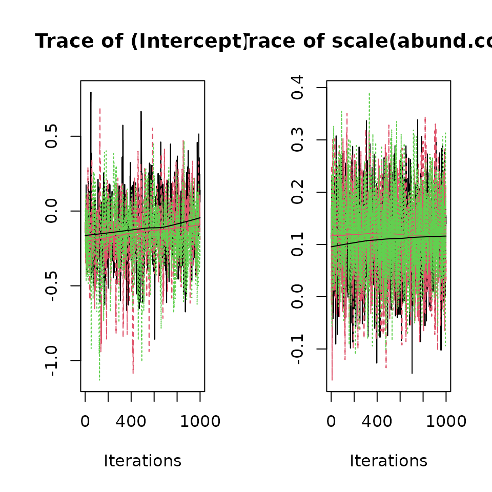
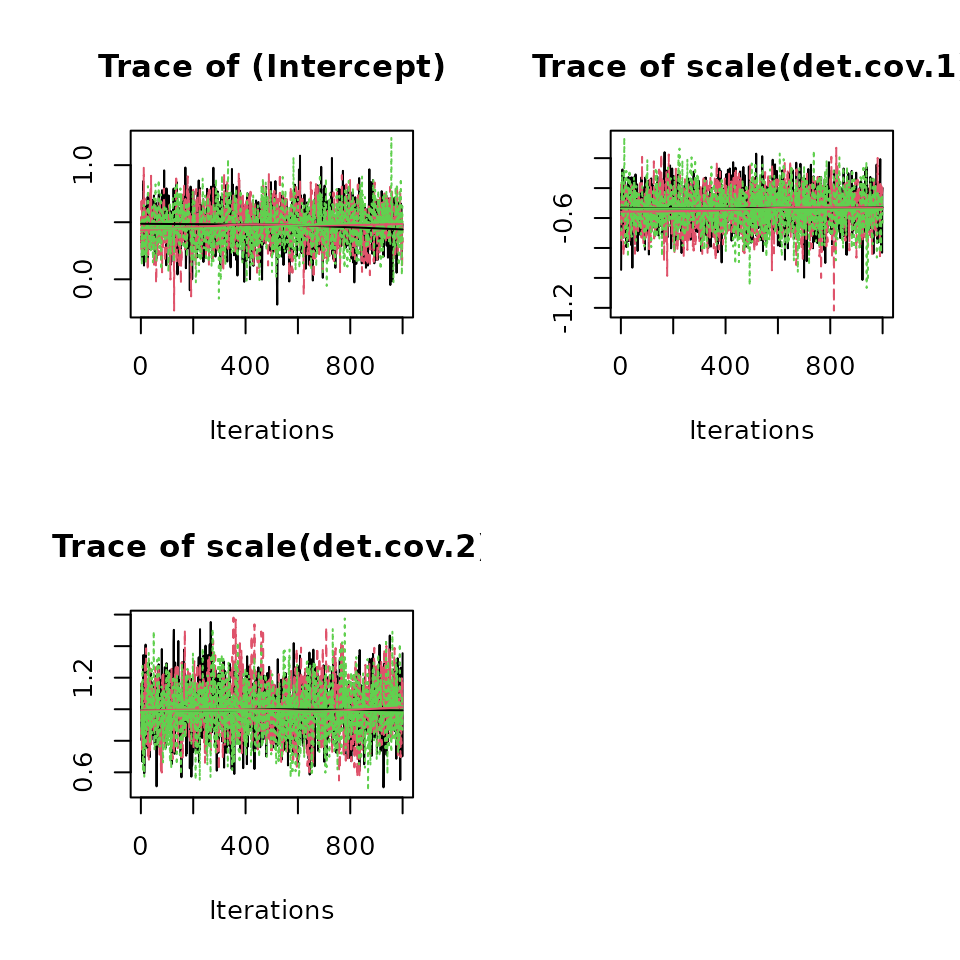
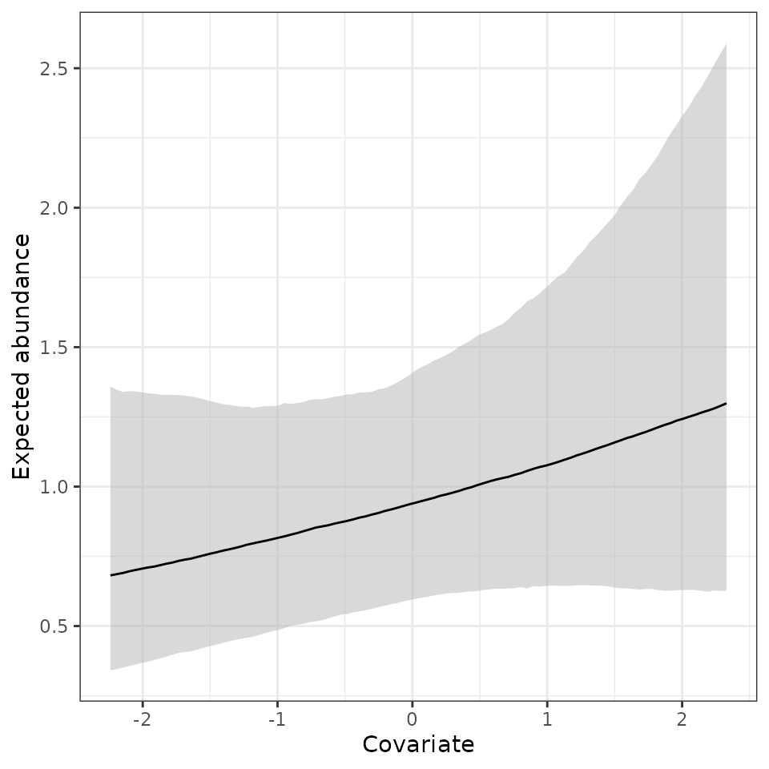
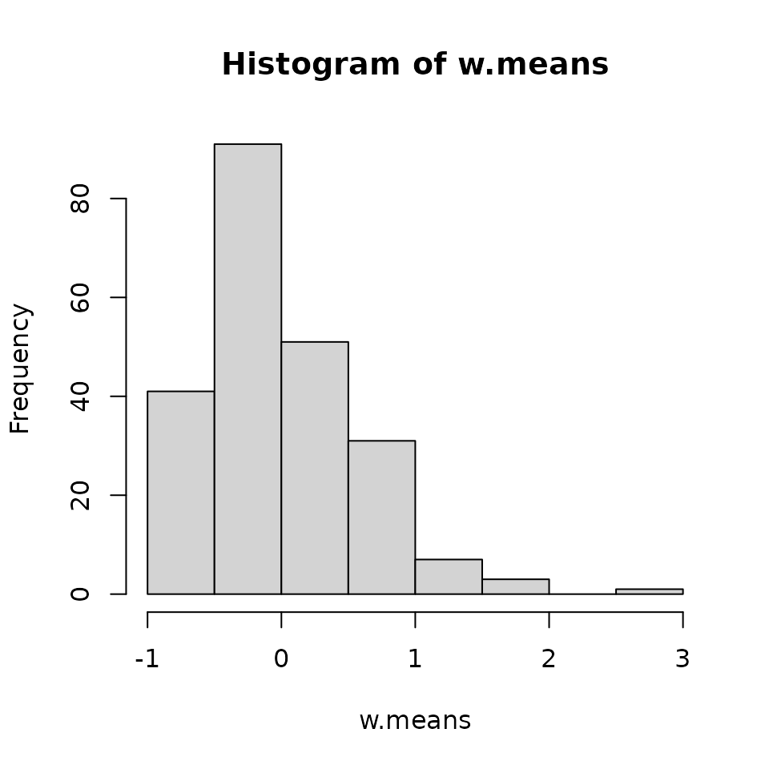
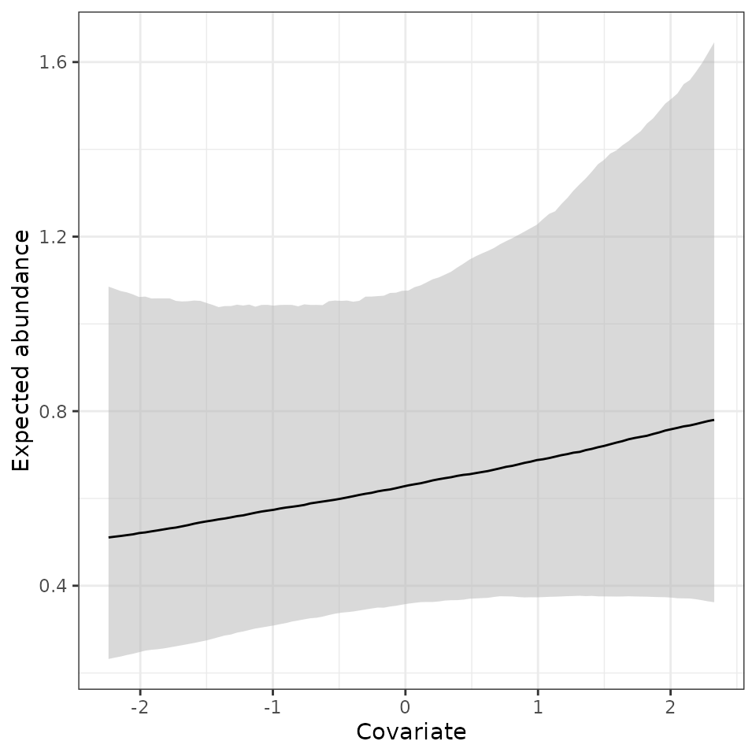
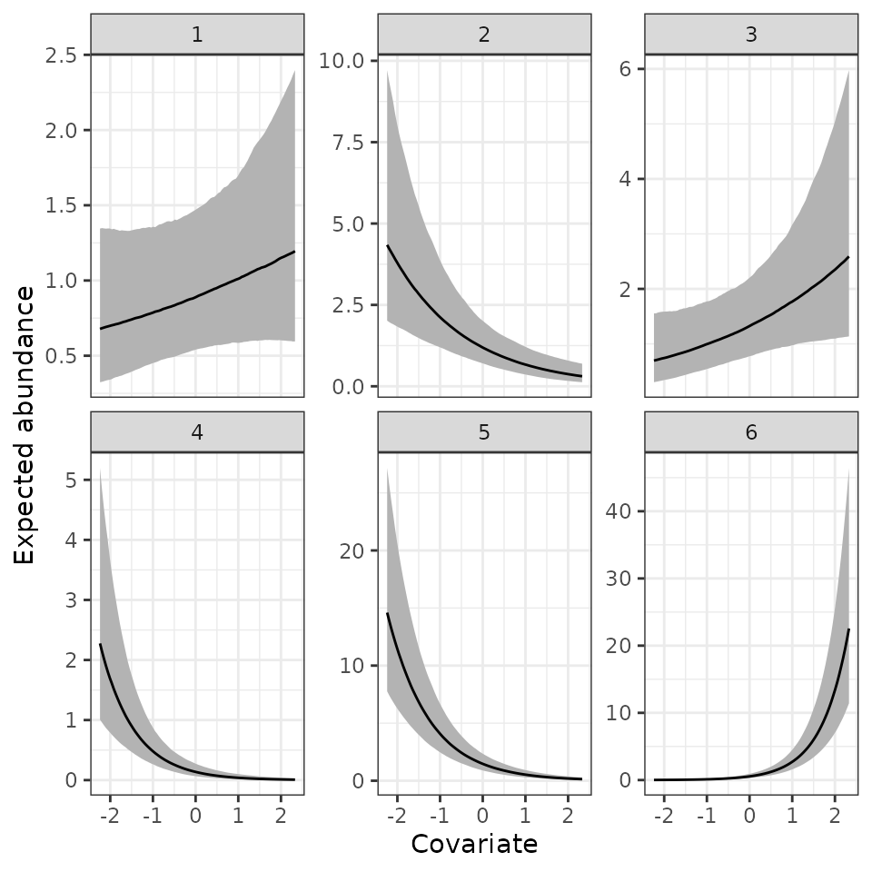
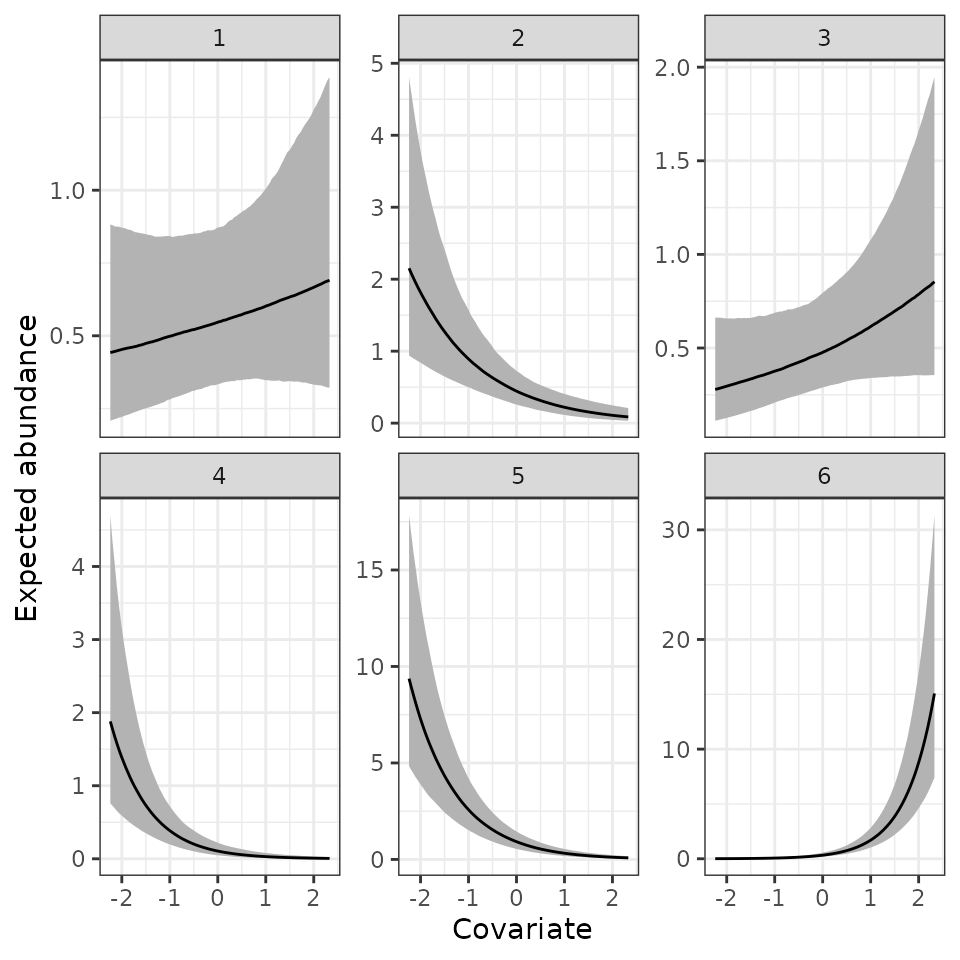
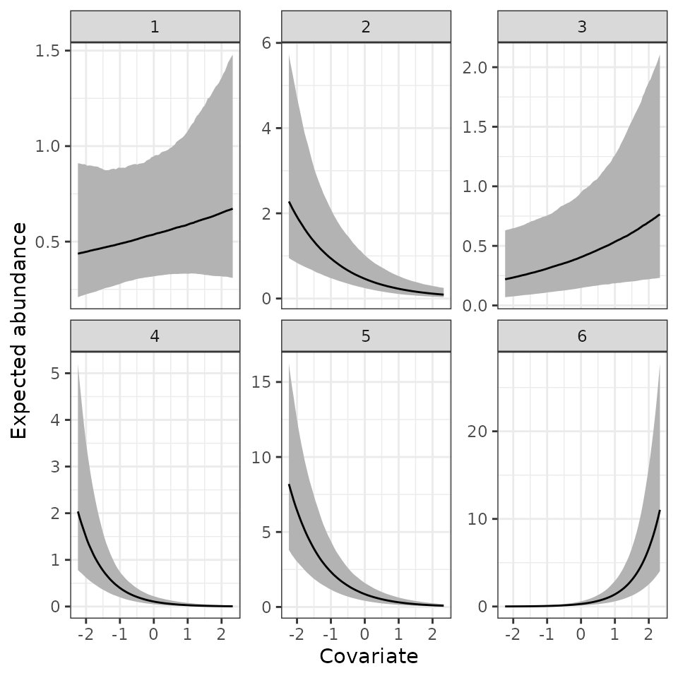

Fitting N-mixture models in spAbundance
Jeffrey W. Doser
2023
Source:vignettes/nMixtureModels.Rmd
nMixtureModels.RmdIntroduction
This vignette provides worked examples and explanations for fitting
single-species and multi-species N-mixture models in the
spAbundance R package. We will provide step by step
examples on how to fit the following models:
- N-mixture model using
NMix(). - Spatial N-mixture model using
spNMix(). - Multi-species N-mixture model using
msNMix(). - Multi-species N-mixture model with species correlations using
lfMsNMix(). - Spatial multi-species N-mixture with species correlations using
sfMsNMix().
In this vignette we are only describing spAbundance
functionality to fit N-mixture models, with separate vignettes on
fitting hierarchical distance sampling models and generalized linear
mixed models. We fit all models in a Bayesian framework using custom
Markov chain Monte Carlo (MCMC) samplers written in C/C++
and called through R’s foreign language interface. Here we
will provide a brief description of each model, with full statistical
details provided in a separate vignette. As with all model types in
spAbundance, we will show how to perform posterior
predictive checks as a Goodness-of-Fit assessment, model comparison
using the Widely Applicable Information Criterion (WAIC), and
out-of-sample predictions using standard R helper functions (e.g.,
predict()). Note that syntax of N-mixture models in
spAbundance closely follows syntax for fitting occupancy
models in spOccupancy (Doser et al.
2022), and that this vignette closely follows the documentation
on the spOccupancy
website.
To get started, we load the spAbundance package, as well
as the coda package, which we will use for some MCMC
summary and diagnostics. We will also use the stars and
ggplot2 packages to create some basic plots of our results.
We then set a seed so you can reproduce the same results as we do.
Example data set: Simulated multi-species count data
As an example data set throughout this vignette, we will use a
simulated data set comprised of 6 species across 225 sites and a maximum
of 3 repeat surveys per site. Note that every site was not sampled for
all three surveys, and thus our data set is “imbalanced”. The data are
provided as part of the spAbundance package and are loaded
with data(dataNMixSim). The manual page obtained using
help(dataNMixSim) or ?dataNMixSim contains
information on the parameter values used to generate the data set with
the simMsNMix() function. You can look them up to have a
benchmark for comparison with the parameter estimates that we will
obtain very soon.
List of 4
$ y : int [1:6, 1:225, 1:3] 1 0 1 0 0 0 NA NA NA NA ...
$ abund.covs: num [1:225, 1:2] -0.373 0.706 0.202 1.588 0.138 ...
..- attr(*, "dimnames")=List of 2
.. ..$ : NULL
.. ..$ : chr [1:2] "abund.cov.1" "abund.factor.1"
$ det.covs :List of 2
..$ det.cov.1: num [1:225, 1:3] -1.28 NA NA NA 1.04 ...
..$ det.cov.2: num [1:225, 1:3] 2.03 NA NA NA -0.796 ...
$ coords : num [1:225, 1:2] 0 0.0714 0.1429 0.2143 0.2857 ...
..- attr(*, "dimnames")=List of 2
.. ..$ : NULL
.. ..$ : chr [1:2] "X" "Y"The object dataNMixSim is a list comprised of the count
data (y), covariates on the abundance portion of the model
(abund.covs), covariates on the detection portion of the
model (det.covs), and the spatial coordinates of each site
(coords) for use in spatial N-mixture models and in
plotting. This list is in the exact format required for input to
N-mixture models in spAbundance. dataNMixSim
contains data on 6 species in the three-dimensional array
y, where the dimensions of y correspond to
species (6), sites (225), and maximum number of replicates at any given
site (3). For single-species N-mixture models in Section 2 and 3, we
will only use data on one species, so we next subset the
dataNmixSim list to only include data from the first
species in a new object data.one.sp.
data.one.sp <- dataNMixSim
data.one.sp$y <- data.one.sp$y[1, , ]
table(data.one.sp$y) # Quick summary.
0 1 2 3 4 5 7 13
276 102 40 8 4 1 2 1 We see that our species is fairly rare, with most observations of the species being 0.
Single-species N-mixture models
Basic model description
Let \(N_j\) denote the true abundance of a species of interest at site \(j = 1, \dots, J\). We model \(N_j\) following either a Poisson or negative binomial (NB) distribution according to
\[\begin{align}\label{abundance} \begin{split} N_j &\sim \text{Poisson}(\mu_j) \text{, or, } \\ N_j &\sim \text{NB}(\mu_j, \kappa), \end{split} \end{align}\]
where \(\mu_j\) is the average abundance at site \(j\) and \(\kappa\) is a positive dispersion parameter. Smaller values of \(\kappa\) indicate overdispersion in the latent abundance values, while higher values indicate minimal overdispersion in abundance relative to a Poisson distribution. Note that as \(\kappa \rightarrow \infty\), a NB model “reverts” back to the simpler Poisson model. We model \(\mu_j\) using a log link function following
\[\begin{equation}\label{muAbund} \text{log}(\mu_j) = \boldsymbol{x}_j^\top\boldsymbol{\beta}, \end{equation}\]
where \(\boldsymbol{\beta}\) is a vector of regression coefficients for a set of covariates \(\boldsymbol{x}_j\) (including an intercept). Note that while not shown, unstructured random intercepts and slopes can be included in the equation for expected abundance. This may for instance be required for accommodating some sorts of “blocks”, such as when sites are nested in a number of different regions.
Following the standard N-mixture model of Royle (2004), we suppose observers count the number of individuals of the species of interest at each site \(j\) over a set of multiple surveys \(k = 1, \dots, K_j\), denoted as \(y_{j, k}\). Note the number of surveys \(K_j\) can vary by site (which is the case with our example simulated data set), but at least some sites must be surveyed more than once to ensure identifiability without making restrictive parameteric assumptions (Knape and Korner-Nievergelt 2015; Stoudt, Valpine, and Fithian 2023). We model \(y_{j, k}\) conditional on the true abundance of the species at site \(j\), \(N_j\), following
\[\begin{equation}\label{y-NMix} y_{j, k} \sim \text{Binomial}(N_j, p_{j, k}), \end{equation}\]
where \(p_{j, k}\) is the probability of detecting an individual given it is present at the site. We model \(p_{j, k}\) using a logit link function in which we can allow detection probability to vary over space and/or surveys. More specifically, we have
\[\begin{equation} \label{p-NMix} \text{logit}(p_{j, k}) = \boldsymbol{v}_{j, k}^\top\boldsymbol{\alpha}, \end{equation}\]
where \(\boldsymbol{\alpha}\) is a vector of the effects of a set of covariates \(\boldsymbol{v}_{j, k}\) (including an intercept). As for the model for abundance, spatially unstructured random effects can be specified for the intercepts or the slopes, e.g., for observer identity in a citizen science probject.
To complete the Bayesian specification of the model, we assign vague normal priors for the abundance (\(\boldsymbol{\beta}\)) and detection (\(\boldsymbol{\alpha}\)) regression coefficients. When fitting a model with a negative binomial distribution for abundance, we specify a uiform prior for the dispersion parameter \(\kappa\).
Fitting single-species N-mixture models with
NMix()
The NMix() function fits single-species N-mixture
models. NMix() has the following arguments:
NMix(abund.formula, det.formula, data, inits, priors, tuning,
n.batch, batch.length, accept.rate = 0.43, family = 'Poisson',
n.omp.threads = 1, verbose = TRUE, n.report = 100,
n.burn = round(.10 * n.batch * batch.length), n.thin = 1,
n.chains = 1, ...)The first two arguments, abund.formula and
det.formula, use standard R model syntax to denote the
covariates to be included in the abundance and detection portions of the
model, respectively. Only the right hand side of the formulas are
included. Random intercepts and slopes can be included in both the
abundance and detection portions of the single-species N-mixture model
using lme4 syntax (Bates et al.
2015). For example, to include a random intercept for different
observers in the detection portion of the model, we would include
(1 | observer) in det.formula, where
observer indicates the specific observer for each data
point. The names of variables given in the formulas should correspond to
those found in data, which is a list consisting of the
following tags: y (count data), abund.covs
(abundance covariates), det.covs (detection covariates).
y is a sites x replicate matrix, abund.covs is
a matrix or data frame with site-specific covariate values, and
det.covs is a list with each list element corresponding to
a covariate to include in the detection portion of the model. Covariates
on detection can vary by site and/or survey, and so these covariates may
be specified as a site by survey matrix for “observation”-level
covariates (i.e., covariates that vary by site and survey) or as a
one-dimensional vector for site-level covariates. Note the tag
offset can also be specified to include an offset in the
model.
spAbundance can handle “imbalanced” data sets (i.e.,
each site may not have the same number of repeat visits). This is the
case with our simulated example, where some sites have three repeat
visits, while others are only visited once. To accommodate such an
imbalanced design, the detection-nondetection data matrix y
should have a value of NA in any site/visit combination
where there is not a survey. For example, let’s take a look at the first
10 rows of our detection-nondetection matrix in
data.one.sp
head(data.one.sp$y, 10) [,1] [,2] [,3]
[1,] 1 NA NA
[2,] NA 2 2
[3,] NA 1 NA
[4,] NA 0 1
[5,] 0 0 0
[6,] 0 NA NA
[7,] 0 NA 0
[8,] 0 0 NA
[9,] 1 2 NA
[10,] NA 0 0Sites 1, 3, and 6 have two NA values and thus were only
sampled once. Sites 2, 4, 7, 8, 9, and 10 have one NA value and were
sampled twice, while site 5 was sampled on all three occasions. Such
imbalanced data sets are very common in practice. This same approach can
be used for any observation-level covariates included in the detection
portion of the model (i.e., simply place an NA for any covariate during
site/visits when the survey was not performed). Note that the missing
values between the detection-nondetection data y and the
detection covariates det.covs will have to align, and if
they don’t spAbundance will return an error. Further,
spAbundance does not allow missing values in any site-level
covariates, and so if there are any missing values in site-level
covariates you must decide the best approach to handle this (e.g.,
impute missing values with the mean, remove sites with any missing
site-level covariates).
The data.one.sp list is already in the required format
for use with the NMix() function. Here we will model
abundance as a function of a continuous covariate
abund.cov.1 as well as a categorical variable
abund.factor.1, which we will treat as a random effect. We
can imagine this categorical variable corresponding to a management
unit, aspect of the experimental design, or some other grouping variable
that we want to account for in our model. We model detection probability
as a function of two continuous variables that vary across sites and
replicates. We standardize all continuous covariates by using the
scale() function in our model specification (note that
standardizing continuous covariates is highly recommended as it helps
aid convergence of the underlying MCMC algorithms):
abund.formula <- ~ scale(abund.cov.1) + (1 | abund.factor.1)
det.formula <- ~ scale(det.cov.1) + scale(det.cov.2) We always like to get an overview of all the data in our analysis
using the str() function. This makes it much more clear to
us which data we put into the model and the dimensions of the given data
set.
str(data.one.sp)List of 4
$ y : int [1:225, 1:3] 1 NA NA NA 0 0 0 0 1 NA ...
$ abund.covs: num [1:225, 1:2] -0.373 0.706 0.202 1.588 0.138 ...
..- attr(*, "dimnames")=List of 2
.. ..$ : NULL
.. ..$ : chr [1:2] "abund.cov.1" "abund.factor.1"
$ det.covs :List of 2
..$ det.cov.1: num [1:225, 1:3] -1.28 NA NA NA 1.04 ...
..$ det.cov.2: num [1:225, 1:3] 2.03 NA NA NA -0.796 ...
$ coords : num [1:225, 1:2] 0 0.0714 0.1429 0.2143 0.2857 ...
..- attr(*, "dimnames")=List of 2
.. ..$ : NULL
.. ..$ : chr [1:2] "X" "Y"Next, we specify the initial values for the MCMC sampler in
inits. NMix() (and all other
spAbundance model fitting functions) will set initial
values by default, but here we will do this explicitly, since in more
complicated cases setting initial values close to the presumed solutions
can be vital for success of an MCMC-based analysis (for instance, this
is the case when fitting distance sampling models in
spAbundance). However, for all models described in this
vignette (in particular the non-spatial models), choice of the initial
values is largely inconsequential, with the exception being that
specifying initial values close to the presumed solutions can decrease
the amount of samples you need to run to arrive at convergence of the
MCMC chains. Thus, when first running a model in
spAbundance, we recommend fitting the model using the
default initial values that spAbundance provides. The
initial values that spAbundance chooses will be reported to
the screen when setting verbose = TRUE. After running the
model for a reasonable period, if you find the chains are taking a long
time to reach convergence, you then may wish to set the initial values
to the mean estimates of the parameters from the initial model fit, as
this will likely help reduce the amount of time you need to run the
model.
The default initial values for abundance and detection regression
coefficients (including the intercepts) are random values from a
standard normal distribution, while the default initial values for the
latent abundance effects are set to the maximum number of individuals
observed at a given site over the replicate surveys at that site. When
fitting an N-mixture model with a negative binomial distribution, the
initial value for the overdispersion parameter is drawn from the prior
distribution. Initial values are specified in a list with the following
tags: N (latent abundance values), alpha
(detection intercept and regression coefficients), beta
(abundance intercept and regression coefficients), and
kappa (negative binomial overdispersion parameter). Below
we set all initial values of the regression coefficients to 0, initial
values for the overdispersion parameter to 0.5, and set initial values
for N based on the count data matrix. For the abundance
(beta) and detection (alpha) regression
coefficients, the initial values are passed either as a vector of length
equal to the number of estimated parameters (including an intercept, and
in the order specified in the model formula), or as a single value if
setting the same initial value for all parameters (including the
intercept). Below we take the latter approach. For the negative binomial
overdispersion parameter, the initial value is simply a single numeric
value. To specify the initial values for the latent abundance at each
site (N), we must ensure we set the value to at least the
maximum number of individuals observed at a site on a given survey,
because we know the true abundance must be greater than or equal to the
number of individuals observed (i.e., assuming no false positives). If
the initial values for N do not meet this criterion,
NMix() will fail. spAbundance will provide a
clear error message if the supplied initial values for N
are invalid. Below we use the raw count data and the
apply() function to set the initial values to the largest
observed count at each site. For any random effects that are included in
the model, we can also specify the initial values for the random effect
variances (sigma.sq.mu for abundance and
sigma.sq.p for detection). By default, these will be drawn
as random values between 0.05 and 2. Here we specify the initial value
for the abundance random effect to 0.5.
# Format with explicit specification of inits for alpha and beta
# with three detection parameters and two abundance parameters
# (including the intercept).
inits <- list(alpha = c(0, 0, 0),
beta = c(0, 0),
kappa = 0.5,
sigma.sq.mu = 0.5,
N = apply(data.one.sp$y, 1, max, na.rm = TRUE))
# Format with abbreviated specification of inits for alpha and beta.
inits <- list(alpha = 0,
beta = 0,
kappa = 0.5,
sigma.sq.mu = 0.5,
N = apply(data.one.sp$y, 1, max, na.rm = TRUE))We next specify the priors for the abundance and detection regression
coefficients, as well as the negative binomial overdispersion parameter.
We assume normal priors for both the detection and abundance regression
coefficients. These priors are specified in a list with tags
beta.normal for abundance and alpha.normal for
detection parameters (including intercepts). Each list element is then
itself a list, with the first element of the list consisting of the
hypermeans for each coefficient and the second element of the list
consisting of the hypervariances for each coefficient. Alternatively,
the hypermeans and hypervariances can be specified as a single value if
the same prior is used for all regression coefficients. By default,
spAbundance will set the hypermeans to 0 and the
hypervariances to 100 for the abundance coefficients and 2.72 for the
detection coefficients. The variance of 2.72 corresponds to a relatively
flat prior on the probability scale (0, 1; Lunn
et al. (2013)). For the negative binomial overdispersion
parameter, we will use a uniform prior. This prior is specified as a tag
in the prior list called kappa.unif, which should be a
vector with two values indicating the lower and upper bound of the
uniform distribution. The default prior is to set the lower bound to 0
and the upper bound to 100. Recall that lower values of
kappa indicate substantial overdispersion and high values
of kappa indicate minimal overdispersion. If there is
little support for overdispersion when fitting a negative binomial
model, we will likely see the estimates of kappa be close
to the upper bound of the uniform prior distribution. For the default
prior distribution, if the estimates of kappa are very
close to 100, this indicates little support for overdispersion in the
model, and we can likely switch to using a Poisson distribution (which
would also likely be favored by model comparison approaches). For models
with random effects in the abundance and/or detection portion of the
N-mixture model, we can also specify the prior for the random effect
variance parameter (sigma.sq.mu for abundance and
sigma.sq.p for detection). We assume inverse-Gamma priors
for these variance parameters and specify them with the tags
sigma.sq.mu.ig and sigma.sq.p.ig,
respectively. These priors are set as a list with two components, where
the first element is the shape parameter and the second element is the
scale parameter. The shape and scale parameters can be specified as a
single value or as vectors with length equal to the number of random
effects included in the model. The default prior distribution for random
effect variances is 0.1 for both the shape and scale parameters. Below
we use default priors for all parameters, but specify them explicitly
for clarity.
priors <- list(alpha.normal = list(mean = 0, var = 2.72),
beta.normal = list(mean = 0, var = 100),
kappa.unif = c(0, 100),
sigma.sq.mu.ig = list(0.1, 0.1))The next four arguments (tuning, n.batch,
batch.length, and accept.rate) are all related
to the specific type of MCMC sampler we use when we fit N-mixture models
in spAbundance. The parameters in N-mixture models are all
estimated using a Metropolis-Hastings step, which can often be slow and
inefficient, leading to slow mixing and convergence of the MCMC chains.
To try and mitigate the slow mixing and convergence issues, we update
all parameters in N-mixture models using an algorithm called an adaptive
Metropolis-Hastings algorithm (see Roberts and
Rosenthal (2009) for more details on this algorithm). In this
approach, we break up the total number of MCMC samples into a set of
“batches”, where each batch has a specific number of MCMC samples. Thus,
we must specify the total number of batches (n.batch) as
well as the number of MCMC samples each batch contains
(batch.length) when specifying the function arguments. The
total number of MCMC samples is n.batch * batch.length.
Typically, we set batch.length = 25 and then play around
with n.batch until convergence of all model parameters is
reached. We generally recommend setting batch.length = 25,
but in certain situations this can be increased to a larger number of
samples (e.g., 100), which can result in moderate decreases in run time.
Here we set n.batch = 1600 for a total of 40,000 MCMC
samples for each MCMC chain we run.
batch.length <- 25
n.batch <- 1600
# Total number of MCMC samples per chain
batch.length * n.batch[1] 40000Importantly, we also need to specify a target acceptance rate and
initial tuning parameters for the abundance and detection regression
coefficients (and the negative binomial overdispersion parameter and any
latent random effects if applicable). These are both features of the
adaptive algorithm we use to sample these parameters. In this adaptive
Metropolis-Hastings algorithm, we propose new values for the parameters
from some proposal distribution, compare them to our previous values,
and use a statistical algorithm to determine if we should accept the new
proposed value or keep the old one. The accept.rate
argument specifies the ideal proportion of times we will accept the
newly proposed values for these parameters. Roberts and Rosenthal (2009) show that if we
accept new values around 43% of the time, then this will lead to optimal
mixing and convergence of the MCMC chains. Following these
recommendations, we should strive for an algorithm that accepts new
values about 43% of the time. Thus, we recommend setting
accept.rate = 0.43 unless you have a specific reason not to
(this is the default value). The values specified in the
tuning argument help control the initial values we will
propose for the abundance/detection coefficients and the negative
binomial overdispersion parameter. These values are supplied as input in
the form of a list with tags beta, alpha, and
kappa. The initial tuning value can be any value greater
than 0, but we generally recommend starting the value out around 0.5.
These tuning values can also be thought of as tuning “variances”, as it
is these values that control the variance of the distribution we use to
generate newly proposed values for the parameters we are trying to
estimate with our MCMC algorithm. In short, the new values that we
propose for the parameters beta, alpha, and
kappa come from a normal distribution with mean equal to
the current value for the given parameter and the variance equal to the
tuning parameter. Thus, the smaller this tuning parameter/variance is,
the closer our proposed values will be to the current value, and vise
versa for large values of the tuning parameter. The “ideal” value of the
tuning variance will depend on the data set, the parameter, and how much
uncertainty there is in the estimate of the parameter. This initial
tuning value that we supply is the first tuning variance that will be
used for the given parameter, and our adaptive algorithm will adjust
this tuning parameter after each batch to yield acceptance rates of
newly proposed values that are close to our target acceptance rate that
we specified in the accept.rate argument. Information on
the acceptance rates for a few of the parameters in your model will be
displayed when setting verbose = TRUE. After some initial
runs of the model, if you notice the final acceptance rate is much
larger or smaller than the target acceptance rate
(accept.rate), you can then change the initial tuning value
to get closer to the target rate. While use of this algorithm requires
us to specify more arguments than if we didn’t “adaptively tune” our
proposal variances, this leads to much shorter run times compared to a
more simplistic approach where we do not have an “adaptive” sampling
approach, and it should thus save us time in the long haul when waiting
for these models to run. For our example here, we set the initial tuning
values to 0.5 for beta, alpha, and
kappa. For models with random effects in either the
abundance or detection portions of the model, we also need to specify
tuning parameters for the latent random effect values
(beta.star for abundance and alpha.star for
detection). We similarly set these to 0.5.
tuning <- list(beta = 0.5, alpha = 0.5, kappa = 0.5, beta.star = 0.5)
# accept.rate = 0.43 by default, so we do not specify it.We also need to specify the length of burn-in (n.burn),
the rate at which we want to thin the posterior samples
(n.thin), and the number of MCMC chains to run
(n.chains). Note that currently spAbundance
runs multiple chains sequentially and does not allow chains to be run
simultaneously in parallel across multiple threads, which is something
we hope to implement in future package development. Instead, we allow
for within-chain parallelization using the n.omp.threads
argument. We can set n.omp.threads to a number greater than
1 and smaller than the number of threads on the computer you are using.
Generally, setting n.omp.threads > 1 will not result in
decreased run times for non-spatial models in spAbundance,
but can substantially decrease run time when fitting spatial models
(Finley, Datta, and Banerjee 2020). Here
we set n.omp.threads = 1.
We will run the model using three chains to assess convergence using the Gelman-Rubin diagnostic (Rhat; Brooks and Gelman (1998)).
n.burn <- 20000
n.thin <- 20
n.chains <- 3We are now almost set to run the model. The family
argument is used to indicate whether we want to model abundance with a
Poisson distribution (Poisson) or a negative binomial
distribution (NB). Here we will start with a Poisson
distribution (the default), which we will compare to a model with a
negative binomial distribution later. The verbose argument
is a logical value indicating whether or not MCMC sampler progress is
reported to the screen. If verbose = TRUE, sampler progress
is reported to the screen. The argument n.report specifies
the interval to report the Metropolis-Hastings sampler acceptance rate.
Note that n.report is specified in terms of batches, not
the overall number of samples. Below we set n.report = 400,
which will result in information on the acceptance rate and tuning
parameters every 400th batch (not sample).
We now are set to fit the model.
out <- NMix(abund.formula = abund.formula,
det.formula = det.formula,
data = data.one.sp,
inits = inits,
priors = priors,
n.batch = n.batch,
batch.length = batch.length,
tuning = tuning,
n.omp.threads = 1,
n.report = 400,
family = 'Poisson',
verbose = TRUE,
n.burn = n.burn,
n.thin = n.thin,
n.chains = n.chains)----------------------------------------
Preparing to run the model
----------------------------------------
----------------------------------------
Model description
----------------------------------------
Poisson N-mixture model with 225 sites.
Samples per Chain: 40000 (1600 batches of length 25)
Burn-in: 20000
Thinning Rate: 20
Number of Chains: 3
Total Posterior Samples: 3000
Source compiled with OpenMP support and model fit using 1 thread(s).
Adaptive Metropolis with target acceptance rate: 43.0
----------------------------------------
Chain 1
----------------------------------------
Sampling ...
Batch: 400 of 1600, 25.00%
Parameter Acceptance Tuning
beta[1] 40.0 0.18211
beta[2] 24.0 0.16811
alpha[1] 56.0 0.26630
alpha[2] 48.0 0.27716
alpha[3] 52.0 0.30025
-------------------------------------------------
Batch: 800 of 1600, 50.00%
Parameter Acceptance Tuning
beta[1] 36.0 0.17150
beta[2] 48.0 0.17150
alpha[1] 40.0 0.28276
alpha[2] 32.0 0.30025
alpha[3] 28.0 0.33183
-------------------------------------------------
Batch: 1200 of 1600, 75.00%
Parameter Acceptance Tuning
beta[1] 44.0 0.17850
beta[2] 28.0 0.17497
alpha[1] 40.0 0.28847
alpha[2] 40.0 0.27716
alpha[3] 20.0 0.35946
-------------------------------------------------
Batch: 1600 of 1600, 100.00%
----------------------------------------
Chain 2
----------------------------------------
Sampling ...
Batch: 400 of 1600, 25.00%
Parameter Acceptance Tuning
beta[1] 68.0 0.16152
beta[2] 36.0 0.17497
alpha[1] 60.0 0.28847
alpha[2] 32.0 0.28847
alpha[3] 40.0 0.33183
-------------------------------------------------
Batch: 800 of 1600, 50.00%
Parameter Acceptance Tuning
beta[1] 36.0 0.17150
beta[2] 32.0 0.16811
alpha[1] 40.0 0.27716
alpha[2] 40.0 0.28276
alpha[3] 32.0 0.34537
-------------------------------------------------
Batch: 1200 of 1600, 75.00%
Parameter Acceptance Tuning
beta[1] 48.0 0.18579
beta[2] 52.0 0.17497
alpha[1] 44.0 0.30631
alpha[2] 36.0 0.29430
alpha[3] 32.0 0.35946
-------------------------------------------------
Batch: 1600 of 1600, 100.00%
----------------------------------------
Chain 3
----------------------------------------
Sampling ...
Batch: 400 of 1600, 25.00%
Parameter Acceptance Tuning
beta[1] 48.0 0.17850
beta[2] 40.0 0.15832
alpha[1] 24.0 0.28276
alpha[2] 32.0 0.31250
alpha[3] 44.0 0.36672
-------------------------------------------------
Batch: 800 of 1600, 50.00%
Parameter Acceptance Tuning
beta[1] 40.0 0.17497
beta[2] 32.0 0.17850
alpha[1] 40.0 0.27168
alpha[2] 44.0 0.30631
alpha[3] 40.0 0.35234
-------------------------------------------------
Batch: 1200 of 1600, 75.00%
Parameter Acceptance Tuning
beta[1] 28.0 0.16811
beta[2] 40.0 0.17497
alpha[1] 24.0 0.29430
alpha[2] 28.0 0.27716
alpha[3] 24.0 0.33853
-------------------------------------------------
Batch: 1600 of 1600, 100.00%NMix() returns a list of class NMix with a
suite of different objects, many of them being coda::mcmc
objects of posterior samples. The “Preparing to run the model” section
will print information on default priors or initial values that are used
when they are not specified in the function call. Here we specified
everything explicitly so no information was reported.
We next use the summary() function on the resulting
NMix() object for a concise, informative summary of the
regression parameters and convergence of the MCMC chains.
summary(out)
Call:
NMix(abund.formula = abund.formula, det.formula = det.formula,
data = data.one.sp, inits = inits, priors = priors, tuning = tuning,
n.batch = n.batch, batch.length = batch.length, family = "Poisson",
n.omp.threads = 1, verbose = TRUE, n.report = 400, n.burn = n.burn,
n.thin = n.thin, n.chains = n.chains)
Samples per Chain: 40000
Burn-in: 20000
Thinning Rate: 20
Number of Chains: 3
Total Posterior Samples: 3000
Run Time (min): 0.4257
Abundance (log scale):
Mean SD 2.5% 50% 97.5% Rhat ESS
(Intercept) -0.1468 0.2196 -0.6161 -0.1403 0.2626 1.0520 546
scale(abund.cov.1) 0.1157 0.0788 -0.0400 0.1150 0.2716 1.0146 2753
Abundance Random Effect Variances (log scale):
Mean SD 2.5% 50% 97.5% Rhat ESS
(Intercept)-abund.factor.1 0.3672 0.3502 0.0778 0.2812 1.1465 1.0638 2229
Detection (logit scale):
Mean SD 2.5% 50% 97.5% Rhat ESS
(Intercept) 0.4670 0.1839 0.1039 0.4689 0.8132 1.0001 1380
scale(det.cov.1) -0.5399 0.1359 -0.8080 -0.5360 -0.2751 1.0027 2833
scale(det.cov.2) 0.9961 0.1713 0.6667 0.9949 1.3414 1.0027 2497Notice that the abundance coefficients are printed on the log scale
and the detection coefficients are on the logit scale. We see that our
species is quite rare, with an average expected abundance of
approximately 0.86, exp(-0.15). We also see a moderate, positive effect
of the covariate, although the 95% credible interval overlaps 0. The
random effect variance mean is approximately 0.37, indicating this is a
potentially important source of variability in abundance for the
species. Note that we can also change the quantiles that are returned in
the summary output if we desire to see additional quantiles. This is
controlled with the quantiles argument.
Call:
NMix(abund.formula = abund.formula, det.formula = det.formula,
data = data.one.sp, inits = inits, priors = priors, tuning = tuning,
n.batch = n.batch, batch.length = batch.length, family = "Poisson",
n.omp.threads = 1, verbose = TRUE, n.report = 400, n.burn = n.burn,
n.thin = n.thin, n.chains = n.chains)
Samples per Chain: 40000
Burn-in: 20000
Thinning Rate: 20
Number of Chains: 3
Total Posterior Samples: 3000
Run Time (min): 0.4257
Abundance (log scale):
Mean SD 25% 50% 75% Rhat ESS
(Intercept) -0.1468 0.2196 -0.2762 -0.1403 -0.0125 1.0520 546
scale(abund.cov.1) 0.1157 0.0788 0.0643 0.1150 0.1701 1.0146 2753
Abundance Random Effect Variances (log scale):
Mean SD 25% 50% 75% Rhat ESS
(Intercept)-abund.factor.1 0.3672 0.3502 0.1849 0.2812 0.452 1.0638 2229
Detection (logit scale):
Mean SD 25% 50% 75% Rhat ESS
(Intercept) 0.4670 0.1839 0.3433 0.4689 0.5885 1.0001 1380
scale(det.cov.1) -0.5399 0.1359 -0.6335 -0.5360 -0.4498 1.0027 2833
scale(det.cov.2) 0.9961 0.1713 0.8806 0.9949 1.1055 1.0027 2497The model summary also provides information on convergence of the MCMC chains in the form of the Gelman-Rubin diagnostic (Brooks and Gelman 1998) and the effective sample size (ESS) of the posterior samples. Here we find all Rhat values are less than 1.1. The ESS values are adequately high for all model parameters, indicating adequate mixing of the MCMC chains.
We can use the plot() function to generate a simple
trace plot of the MCMC chains to provide additional confidence in the
convergence (or non-convergence) of the model. The plotting
functionality for each model type in spAbundance takes
three arguments: x (the resulting object from fitting the
model), param (the parameter name that you want to
display), and density (a logical value indicating whether
to also generate a density plot in addition to the traceplot). To see
the parameter names available to use with plot() for a
given model type, you can look at the manual page for the function,
which for models generated from NMix() can be accessed with
?plot.NMix.
# Abundance regression coefficients
plot(out, param = 'beta', density = FALSE)
# Detection regression coefficients
plot(out, param = 'alpha', density = FALSE)
Posterior predictive checks
The function ppcAbund() performs a posterior predictive
check on all spAbundance model objects as a Goodness-of-Fit
(GoF) assessment. The fundamental idea of GoF testing is that a good
model should generate data that closely align with the observed data. If
there are drastic differences in the true data from the data generated
under the model, our model is likely not very useful (Hobbs and Hooten 2015). In
spAbundance, we perform posterior predictive checks using
the following approach:
- Fit the model using any of the model-fitting functions (here
NMix()), which will generate replicated values for all observed data points from the posterior predictive distribution of the data. - Optionally bin both the actual and the replicated count data in some manner, such as by site or replicate.
- Compute a fit statistic on both the actual data and also on the model-generated ‘replicate data’.
- Compare the fit statistics for the true data and replicate data. If they are widely different, this suggests a lack of fit of the model to the actual data set at hand.
To perform a posterior predictive check, we send the resulting
NMix model object as input to the ppcAbund()
function, along with a fit statistic (fit.stat) and a
numeric value indicating how to group, or bin, the data
(group). Currently supported fit statistics include the
Freeman-Tukey statistic and the Chi-Squared statistic
(freeman-tukey or chi-squared, respectively,
Kéry and Royle (2016)). Currently,
ppcAbund() allows the user to group the data by row (site;
group = 1), column (replicate; group = 2), or
not at all (group = 0). ppcAbund() will then
return a set of posterior samples for the fit statistic (or discrepancy
measure) using the actual data (fit.y) and model generated
replicate data set (fit.y.rep), summed across all data
points in the chosen manner. For example, when setting
group = 1, spAbundance will first sum all of
the count values at a given site across all replicates at that site,
then calculate the fit statistic using the site-level sums. When setting
group = 0, spAbundance calculates the fit
statistic directly on the count value associated with each site and
replicate. We generally recommend performing a posterior predictive
check using multiple forms of grouping, as they may reveal (or fail to
reveal) different inadequacies of the model for the specific data set at
hand (Kéry and Royle 2016). Throughout
this vignette, we will display different types of posterior predictive
checks using different combinations of the fit statistic and grouping
approach.
The resulting values from a call to ppcAbund() can be
used with the summary() function to generate a Bayesian
p-value, which is the probability, under the fitted model, to obtain a
value of the fit statistic that is more extreme (i.e., larger) than the
one observed, i.e., for the actual data. Bayesian p-values are sensitive
to individual values, so we may also want to explore the discrepancy
measures for each (potentially “grouped”) data point.
ppcAbund() returns a matrix of posterior quantiles for the
fit statistic for both the observed (fit.y.group.quants)
and model generated, replicate data
(fit.y.rep.group.quants) for each “grouped” data point.
We next perform a posterior predictive check using the Freeman-Tukey
statistic grouping the data by sites. We summarize the posterior
predictive check with the summary() function, which reports
a Bayesian p-value. A Bayesian p-value that hovers around 0.5 indicates
adequate model fit, while values less than 0.1 or greater than 0.9
suggest our model does not fit the data well (Hobbs and Hooten 2015). As always with a
simulation-based analysis using MCMC, you will get numerically slightly
different values.
Call:
ppcAbund(object = out, fit.stat = "freeman-tukey", group = 1)
Samples per Chain: 40000
Burn-in: 20000
Thinning Rate: 20
Number of Chains: 3
Total Posterior Samples: 3000
Bayesian p-value: 0
Fit statistic: freeman-tukey The Bayesian p-value here is 0, indicating inadequate model fit. In
particular, a value close to 0 indicates there is more variability in
the observed data points than the replicate data points generated by our
model. This could be a result of (1) missing sources of variability in
true abundance; (2) missing sources of variability in detection
probability; or (3) missing sources of variability in both abundance and
detection. We will see later in the vignette that our low Bayesian
p-value in this case is a result of additional spatial variability in
abundance. See the introductory
spOccupancy vignette for ways to further explore
resulting objects from posterior predictive checks.
A brief note on generation of replicate data for posterior predictive checks
For N-mixture models, the ppcAbund() function contains
an additional argument type, which is used to indicate the
specific form of replicate data value to generate from the given model.
This argument can take two values: marginal and
conditional. For type = 'conditional', the
replicate data values are generated conditional on the estimated values
of the latent abundance random effects N, while for
type = 'marginal', the replicate data values are not
generated conditional on the latent effects N. When
calculating the replicate data, we generate a different replicate data
set for each MCMC sample \(l\), such
that we can generate a full distribution of replicate data values (i.e.,
the posterior predictive distribution of the data). More specifically,
for the conditional replicate data values, the value at site \(j\) and replicate \(k\) for MCMC sample \(l\), denoted as \(y^{(l)}_{\text{rep}, j, k}\) is calculated
according to
\[\begin{equation} y^{(l)}_{\text{rep}, j, k} \sim \text{Binomial}(N^{(l)}_j, p^{(l)}_{j, k}), \end{equation}\]
where \(N^{(l)}_j\) is the estimated abundance at site \(j\) for MCMC sample \(l\) and \(p^{(l)}_{j, k}\) is the probability of detecting an individual at site \(j\) during replicate \(k\) for MCMC sample \(l\). The reason we refer to these as “conditional” replicate data values is because the values of \(N^{(l)}_j\), which are estimated directly when fitting the model, are actually conditional on the observed data values. Recall that when supplying initial values for \(N_j\), we had to ensure the initial values were greater than or equal to the observed data values. This showcases the conditional nature of the \(N^{(l)}_j\) estimates (which form the posterior distribution for \(N_j\)) when fitting the model, as the smallest value \(N^{(l)}_j\) can take at any given iteration of the MCMC algorithm \(l\) is the largest observed number of individuals at that site across all \(K_j\) replicates. Thus, replicate values generated in this manner are in a sense conditional on the observed data values given the constraints on \(N^{(l)}_j\).
Instead, we can imagine calculating replicate data in a slightly different way that eliminates the conditional nature of the \(N^{(l)}_j\) estimates. The second approach, which we refer to as the “marginal” approach, generates replicate data by first predicting a value of latent abundance at site \(j\) using the expected abundance at site \(j\) at MCMC sample \(l\) (i.e., \(\mu^{(l)}_j\)), and then subsequently generating a replicate data point for each replicate \(k\) at site \(j\). More specifically, we generate marginal replicate data values according to
\[\begin{equation} \begin{split} N^{(l)}_{\text{rep}, j} &\sim \text{Poisson}(\mu^{(l)}_j), \\ y^{(l)}_{\text{rep}, j, k} &\sim \text{Binomial}(N^{(l)}_{\text{rep}, j}, p^{(l)}_{j, k}). \end{split} \end{equation}\]
Note that the Poisson distribution would be replaced with a negative binomial distribution if that is used to fit the model. By calculating replicate values in this manner, the \(N^{(l)}_{\text{rep}, j}\) values are no longer required to be at least as large as the maximum number of individuals ever observed at a site.
We performed a small simulation study to assess the ability of the
two approaches to detect unmodeled spatial heterogeneity in abundance.
Very briefly, we simulated 100 data sets where count data were generated
at 225 sites with a maximum of three replicate surveys at any given
site. We simulated abundance as a function of two covariates and
additional residual spatial autocorrelation. We then fit an N-mixture
model to each of the data sets using NMix() in which we did
not account for the residual spatial autocorrelation. Finally, we
performed a posterior predictive check and calculated a Bayesian p-value
using both the marginal and conditional approach. For the posterior
predictive check, we used the Freeman-Tukey statistic and grouped the
data by site. Ideally, our posterior predictive check should indicate to
us that there is additional variation in the data that we are not
accounting for. The full script used to generate the data is available
for download here. We
load the conditional and marginal Bayesian p-values from the simulation
study below and look at their values.
# Load the results from online
load(url("https://www.jeffdoser.com/files/misc/nmix-sim/nmix-sim-results.rda"))
# Conditional Bayesian p-values
round(conditional.bps, 2) [1] 0.00 0.02 0.05 0.01 0.03 0.00 0.31 0.63 0.07 0.00 0.00 0.01 0.04 0.00 0.01
[16] 0.00 0.00 0.00 0.01 0.01 0.03 0.00 0.00 0.02 0.00 0.21 0.00 0.00 0.09 0.00
[31] 0.07 0.00 0.44 0.04 0.17 0.00 0.00 0.00 0.00 0.00 0.05 0.01 0.01 0.00 0.00
[46] 0.01 0.00 0.00 0.36 0.03 0.00 0.00 0.01 0.01 0.08 0.00 0.00 0.00 0.02 0.01
[61] 0.00 0.04 0.00 0.13 0.00 0.00 0.01 0.06 0.06 0.00 0.00 0.00 0.00 0.04 0.00
[76] 0.00 0.24 0.00 0.00 0.02 0.00 0.00 0.00 0.00 0.02 0.01 0.00 0.00 0.00 0.52
[91] 0.04 0.38 0.01 0.00 0.01 0.01 0.08 0.00 0.00 0.02
# Marginal Bayesian p-values
round(marginal.bps, 2) [1] 0.00 0.00 0.00 0.00 0.00 0.00 0.45 0.00 0.00 0.00 0.00 0.00 0.00 0.00 0.00
[16] 0.00 0.00 0.00 0.00 0.00 0.01 0.00 0.00 0.00 0.00 0.05 0.00 0.00 0.00 0.00
[31] 0.00 0.00 0.23 0.00 0.00 0.00 0.00 0.00 0.00 0.00 0.00 0.00 0.00 0.00 0.00
[46] 0.00 0.00 0.00 0.03 0.00 0.00 0.00 0.00 0.00 0.00 0.00 0.00 0.00 0.00 0.00
[61] 0.00 0.00 0.00 0.00 0.00 0.00 0.00 0.01 0.00 0.00 0.00 0.00 0.00 0.00 0.00
[76] 0.00 0.02 0.00 0.00 0.00 0.00 0.00 0.00 0.00 0.00 0.00 0.00 0.00 0.00 0.33
[91] 0.00 0.01 0.00 0.00 0.00 0.00 0.00 0.00 0.00 0.00
# How many conditional values are not rejected (e.g., > 0.1 and < 0.9)
sum(conditional.bps > 0.1 & conditional.bps < 0.9)[1] 10
# How many marginal values are not rejected (e.g., > 0.1 and < 0.9)
sum(marginal.bps > 0.1 & marginal.bps < 0.9)[1] 3Here we see the marginal approach performs slightly better at detecting the unmodeled spatial heterogeneity compared to the conditional Bayesian p-values. In particular, we find support for inadequate model fit in 97 out of 100 simulations for the marginal approach, while we find support for inadequate model fit in 90 of the simulations using the conditional approach. Because we simulated the data with additional spatial variation in abundance that we are not accounting for, our two approaches are doing a good job of detecting the inadequate performance of the non-spatial N-mixture model, with the marginal approach performing slightly better.
This concept of what we called “marginal” and “conditional” replicate values is not new to the statistical ecology literature. In particular, Conn et al. (2018) discuss this concept (and many more aspects of Goodness-of-Fit checking in hierarchical Bayesian models), and give a nice visual summary of this idea in their Figure 4 in the context of hierarchical spatial models. Marshall and Spiegelhalter (2003) discuss a similar concept in the context of disease mapping, in which they refer to what we call a “marginal” approach as a “mixed” posterior predictive check and advocate for its use. We believe additional exploration of posterior predictive checks and other associated Goodness-of-Fit tests in hierarchical models like N-mixture models, hierarchical distance sampling models, and occupancy models is an important avenue of future research. Here we provide options to perform posterior predictive checks using both types (with the default being marginal), and encourage users to explore multiple forms of performing posterior predictive checks to increase one’s comfort that the fitted model is an adequate representation of the data-generating process. Our small and simple simulation study showed similar performance of the two approaches with the marginal approach performing slightly better than the conditional approach, but additional, more in-depth simulation studies are needed to better assess their performance. These results align with Marshall and Spiegelhalter (2003), who found the “marginal” approach to outperform the more traditional “conditional” approach in the context of a spatial regression model. Further exploring this potential pattern for N-mixture, hierarchical distance sampling, and occupancy-type models is an important area of future work. This discussion applies to all N-mixture models discussed in this vignette.
Model selection using WAIC
Posterior predictive checks allow us to assess how well our model fits the data, but they are not very useful if we want to compare multiple competing models and ultimately select a final model based on some criterion. Bayesian model selection is very much a constantly changing field. See Hooten and Hobbs (2015) for an accessible overview of Bayesian model selection for ecologists.
For Bayesian hierarchical models like N-mixture models, the most common Bayesian model selection criterion, the deviance information criterion or DIC, is not applicable (Hooten and Hobbs 2015). Instead, the Widely Applicable Information Criterion (Watanabe 2010) is often recommended to compare a set of models and select the best-performing model for final analysis.
The WAIC is calculated for all spAbundance model objects
using the function waicAbund(). We calculate the WAIC
as
\[ \text{WAIC} = -2 \times (\text{elppd} - \text{pD}), \]
where elppd is the expected log point-wise predictive density and pD is the effective number of parameters. We calculate elppd by calculating the likelihood for each posterior sample, taking the mean of these likelihood values, taking the log of the mean of the likelihood values, and summing these values across all sites. We calculate the effective number of parameters by calculating the variance of the log likelihood for each site taken over all posterior samples, and then summing these values across all sites.
We calculate the WAIC using waicAbund() for our model
below (as always, note some slight differences with your solutions due
to Monte Carlo error).
waicAbund(out)N.max not specified. Setting upper index of integration of N to 10 plus
the largest estimated abundance value at each site in object$N.samples elpd pD WAIC
-369.16550 22.74705 783.82511 Note the somewhat cryptic message that is displayed to the screen
when you run the previous line. When calculating WAIC for N-mixture
models (and hierarchical
distance sampling models), we need to integrate out the latent
abundance values, which requires setting an upper bound to the potential
value of the latent abundance values \(N_j\) at each spatial location. By default,
waicAbund() will set that upper bound to the largest
abundance value at each site plus 10 (as indicated by the message). This
upper bound can be controlled further with the N.max
argument in waicAbund(). See the help page for
waicAbund for details.
Now let’s do a bit of model comparison. We will fit the same model as
before, except now we will use a negative binomial distribution. We fit
the model below, setting verbose = FALSE to hide the
messages printed by the model fitting functions.
# Approx run time: .5 minute
out.2 <- NMix(abund.formula = ~ abund.cov.1 + (1 | abund.factor.1),
det.formula = det.formula, data = data.one.sp,
inits = inits, priors = priors, n.batch = n.batch,
batch.length = batch.length, tuning = tuning,
n.omp.threads = 1, family = 'NB', verbose = FALSE,
n.burn = n.burn, n.thin = n.thin, n.chains = n.chains)
# Compare models with WAIC
# Poisson
waicAbund(out)N.max not specified. Setting upper index of integration of N to 10 plus
the largest estimated abundance value at each site in object$N.samples elpd pD WAIC
-369.16550 22.74705 783.82511
# Negative binomial
waicAbund(out.2)N.max not specified. Setting upper index of integration of N to 10 plus
the largest estimated abundance value at each site in object$N.samples elpd pD WAIC
-355.28485 15.51822 741.60615 From this simple model comparison exercise, we see the negative binomial model outperforms the Poisson model, indicating there is substantial overdispersion in latent abundance that is not captured by the covariate/random effect included in the model.
Prediction
All model objects from a call to spAbundance
model-fitting functions can be used with predict() to
generate a series of posterior predictive samples at new locations,
given the values of all covariates used in the model fitting process.
Given that we standardized the covariate values when we fit the model,
we need to standardize the covariate values for prediction using the
exact same values of the mean and standard deviation of the covariate
values used to fit the data.
We envision the predict() functions will be used most
often for two purposes: (1) generating marginal effects plots; and (2)
predicting across some region of interest. The approach to do the
prediction is the same for both purposes. In this vignette, we will use
the predict() function to generate marginal effects plots
for the effect of the covariate on abundance. See the hierarchical
distance sampling vignette for examples of how to do prediction with
the purpose of creating a map of abudance across space (the syntax is
exactly the same for N-mixture models).
First, we create a set of evenly-spaced values of the covariate across the range of observed values, and subsequently standardize them by the mean and standard deviation of the covariate used to fit the model. Note that we could of course predict across some other range of values that are interesting for a given study, of course subject to the caveat that any extrapolation beyond the observed range of a covariate may be risky.
cov.pred.vals <- seq(min(dataNMixSim$abund.covs[, 'abund.cov.1']),
max(dataNMixSim$abund.covs[, 'abund.cov.1']),
length.out = 100)
# Scale predicted values by mean and sd used to fit the model
cov.pred.vals.s <- (cov.pred.vals - mean(dataNMixSim$abund.covs[, 'abund.cov.1'])) /
sd(dataNMixSim$abund.covs[, 'abund.cov.1'])For NMix(), the predict() function takes
four arguments:
-
object: theNMixfitted model object. -
X.0: a matrix or data frame consisting of the design matrix for the prediction locations (which must include an intercept if our model contained one). -
ignore.RE: a logical value indicating whether or not to remove random effects from the predicted values. By default, this is set toFALSE, and so prediction will include the random effects. -
type: a quoted keyword indicating whether we want to predictabundanceordetection. This is by default set toabundance.
Here, we only seek to predict to visualize the relationship between
the covariate and abundance, and so we will predict without the random
effect and set ignore.RE = TRUE. Thus, our design matrix
that we form below only consists of the intercept and covariate value.
If we were to predict with the random effect, the random effect values
at the prediction locations would be included as another column in
X.0.
X.0 <- as.matrix(data.frame(intercept = 1, abund.cov.1 = cov.pred.vals.s))
out.pred <- predict(out.2, X.0, ignore.RE = TRUE)
str(out.pred)List of 3
$ mu.0.samples: 'mcmc' num [1:3000, 1:100] 0.735 0.596 0.859 0.678 0.556 ...
..- attr(*, "mcpar")= num [1:3] 1 3000 1
$ N.0.samples : 'mcmc' num [1:3000, 1:100] 0 0 3 0 2 0 1 1 2 0 ...
..- attr(*, "mcpar")= num [1:3] 1 3000 1
$ call : language predict.NMix(object = out.2, X.0 = X.0, ignore.RE = TRUE)
- attr(*, "class")= chr "predict.NMix"The resulting object consists of posterior predictive samples for the
expected abundances (mu.0.samples) and latent abundance
values (N.0.samples). The beauty of the Bayesian paradigm,
and the MCMC computing machinery, is that these predictions all have
fully propagated uncertainty. Below, we produce a plot showing the
relationship between expected abundance and the covariate, with the 95%
credible interval shown in grey and the posterior median shown with the
black line.
# Get the lower bound, median, and 95% credible interval
mu.0.quants <- apply(out.pred$mu.0.samples, 2, quantile,
prob = c(0.025, 0.5, 0.975))
mu.plot.dat <- data.frame(mu.med = mu.0.quants[2, ],
mu.low = mu.0.quants[1, ],
mu.high = mu.0.quants[3, ],
abund.cov.1 = cov.pred.vals)
ggplot(mu.plot.dat, aes(x = abund.cov.1, y = mu.med)) +
geom_ribbon(aes(ymin = mu.low, ymax = mu.high), fill = 'grey70', alpha = 0.5) +
geom_line() +
theme_bw() +
labs(x = 'Covariate', y = 'Expected abundance') 
Here we see a positive relationship between expected abundance and the covariate, but there is substantial uncertainty in this relationship.
Single-species spatial N-mixture models
Basic model description
When working across large spatial domains, accounting for residual spatial autocorrelation in species distributions can often improve predictive performance of a model, leading to more accurate predictions of species abundance patterns (Guélat and Kéry 2018). We here extend the basic single-species N-mixture model to incorporate a spatial random effect that accounts for unexplained spatial variation in species abundance across a region of interest. Let \(\boldsymbol{s}_j\) denote the geographical coordinates of site \(j\) for \(j = 1, \dots, J\). In all spatially-explicit models, we include \(\boldsymbol{s}_j\) directly in the notation of spatially-indexed variables to indicate the model is spatially-explicit. More specifically, the expected abundance at site \(j\) with coordinates \(\boldsymbol{s}_j\), \(\mu(\boldsymbol{s}_j)\), now takes the form
\[\begin{equation} \text{log}(\mu(\boldsymbol{s}_j) = \boldsymbol{x}(\boldsymbol{s}_j)^{\top}\boldsymbol{\beta} + \text{w}(\boldsymbol{s}_j), \end{equation}\]
where \(\text{w}(\boldsymbol{s}_j)\) is a spatial random effect modeled with a Nearest Neighbor Gaussian Process (NNGP; Datta et al. (2016)). More specifically, we have
\[\begin{equation} \textbf{w}(\boldsymbol{s}) \sim N(\boldsymbol{0}, \boldsymbol{\tilde{\Sigma}}(\boldsymbol{s}, \boldsymbol{s}', \boldsymbol{\theta})), \end{equation}\]
where \(\boldsymbol{\tilde{\Sigma}}(\boldsymbol{s}, \boldsymbol{s}', \boldsymbol{\theta})\) is the NNGP-derived spatial covariance matrix that originates from the full \(J \times J\) covariance matrix \(\boldsymbol{\Sigma}(\boldsymbol{s}, \boldsymbol{s}', \boldsymbol{\theta})\) that is a function of the distances between any pair of site coordinates \(\boldsymbol{s}\) and \(\boldsymbol{s}'\) and a set of parameters \((\boldsymbol{\theta})\) that govern the spatial process. The vector \(\boldsymbol{\theta}\) is equal to \(\boldsymbol{\theta} = \{\sigma^2, \phi, \nu\}\), where \(\sigma^2\) is a spatial variance parameter, \(\phi\) is a spatial decay parameter, and \(\nu\) is a spatial smoothness parameter. \(\nu\) is only specified when using a Matern correlation function. The detection portion of the N-mixture model remains unchanged from the non-spatial N-mixture model. The NNGP is a computationally efficient alternative to working with a full Gaussian process model, which is notoriously slow for even moderately large data sets. See Datta et al. (2016) and Finley et al. (2019) for complete statistical details on the NNGP.
Fitting single-species spatial N-mixture models with
spNMix()
We will fit the same N-mixture model that we fit previously using
NMix(), but we will now make the model spatially-explicit
by incorporating a spatial process with spNMix(). The
spNMix() function fits single-species spatial N-mixture
models.
spNMix(abund.formula, det.formula, data, inits, priors, tuning,
cov.model = 'exponential', NNGP = TRUE,
n.neighbors = 15, search.type = 'cb',
n.batch, batch.length, accept.rate = 0.43, family = 'Poisson',
n.omp.threads = 1, verbose = TRUE, n.report = 100,
n.burn = round(.10 * n.batch * batch.length), n.thin = 1,
n.chains = 1, ...)The arguments to spNMix() are very similar to those we
saw with NMix(), with a few additional components. The
abundance (abund.formula) and detection
(det.formula) formulas, as well as the list of data
(data), take the same form as we saw in
NMix(), with random slopes and intercepts allowed in both
the abundance and detection models. Notice the coords
matrix in the data.one.sp list of data. We did not use this
for NMix(), but specifying the spatial coordinates in
data is necessary for all spatially explicit models in
spAbundance.
abund.formula <- ~ scale(abund.cov.1) + (1 | abund.factor.1)
det.formula <- ~ scale(det.cov.1) + scale(det.cov.2)
str(data.one.sp) # coords is required for spNMix()List of 4
$ y : int [1:225, 1:3] 1 NA NA NA 0 0 0 0 1 NA ...
$ abund.covs: num [1:225, 1:2] -0.373 0.706 0.202 1.588 0.138 ...
..- attr(*, "dimnames")=List of 2
.. ..$ : NULL
.. ..$ : chr [1:2] "abund.cov.1" "abund.factor.1"
$ det.covs :List of 2
..$ det.cov.1: num [1:225, 1:3] -1.28 NA NA NA 1.04 ...
..$ det.cov.2: num [1:225, 1:3] 2.03 NA NA NA -0.796 ...
$ coords : num [1:225, 1:2] 0 0.0714 0.1429 0.2143 0.2857 ...
..- attr(*, "dimnames")=List of 2
.. ..$ : NULL
.. ..$ : chr [1:2] "X" "Y"The initial values (inits) are again specified in a
list. Valid tags for initial values now additionally include the
parameters associated with the spatial random effects. These include:
sigma.sq (spatial variance parameter), phi
(spatial decay parameter), w (the latent spatial random
effects at each site), and nu (spatial smoothness
parameter), where the latter is only specified if adopting a Matern
covariance function (i.e., cov.model = 'matern').
spAbundance supports four spatial covariance models
(exponential, spherical,
gaussian, and matern), which are specified in
the cov.model argument. Throughout this vignette, we will
use an exponential covariance model, which we often use as our default
covariance model when fitting spatially-explicit models and is commonly
used throughout ecology. To determine which covariance function to use,
we can fit models with the different covariance functions and compare
them using WAIC to select the best performing function. We will note
that the Matern covariance function has the additional spatial
smoothness parameter \(\nu\) and thus
can often be more flexible than the other functions. However, because we
need to estimate an additional parameter, this also tends to require
more data (i.e., a larger number of sites) than the other covariance
functions, and so we encourage use of the three simpler functions if
your data set is small. We note that model estimates are generally
fairly robust to the different covariance functions, although certain
functions may provide substantially better estimates depending on the
specific form of the underlying spatial autocorrelation in the data. For
example, the Gaussian covariance function is often useful for accounting
for spatial autocorrelation that is very smooth (i.e., long range
spatial dependence). See Chapter 2 in Banerjee,
Carlin, and Gelfand (2003) for a more thorough discussion of
these functions and their mathematical properties.
The default initial values for phi, and nu
are set to random values from the prior distribution, while the default
initial value for sigma.sq is set to a random value between
0.05 and 3. In all spatially-explicit models described in this vignette,
the spatial decay parameter phi is often the most sensitive
to initial values. In general, the spatial decay parameter will often
have poor mixing and take longer to converge than the rest of the
parameters in the model, so specifying an initial value that is
reasonably close to the resulting value can really help decrease run
times for complicated models. As an initial value for the spatial decay
parameter phi, we compute the mean distance between points
in our coordinates matrix and then set it equal to 3 divided by this
mean distance. When using an exponential covariance function, \(\frac{3}{\phi}\) is the effective range, or
the distance at which the residual spatial correlation between two sites
drops to 0.05 (Banerjee, Carlin, and Gelfand
2003). Thus our initial guess for this effective range is the
average distance between sites across the simulated region. As with all
other parameters, we generally recommend using the default initial
values for an initial model run, and if the model is taking a very long
time to converge you can rerun the model with initial values based on
the posterior means of estimated parameters from the initial model fit.
For the spatial variance parameter sigma.sq, we set the
initial value to 1. This corresponds to a moderate amount of spatial
variance. Further, we set the initial values of the latent spatial
random effects at each site to 0. The initial values for these random
effects has an extremely small influence on the model results, so we
generally recommend setting their initial values to 0 as we have done
here (this is also the default). However, if you are running your model
for a very long time and are seeing very slow convergence of the MCMC
chains, setting the initial values of the spatial random effects to the
mean estimates from a previous run of the model could help reach
convergence faster.
# Pair-wise distances between all sites
dist.mat <- dist(data.one.sp$coords)
# Exponential covariance model
cov.model <- 'exponential'
# Specify list of inits
inits <- list(alpha = 0,
beta = 0,
kappa = 0.5,
sigma.sq.mu = 0.5,
N = apply(data.one.sp$y, 1, max, na.rm = TRUE),
sigma.sq = 1,
phi = 3 / mean(dist.mat),
w = rep(0, nrow(data.one.sp$y)))The parameter NNGP is a logical value that specifies
whether we want to use an NNGP to fit the model. Currently, only
NNGP = TRUE is supported, but we may eventually add
functionality to fit full Gaussian Process models. The arguments
n.neighbors and search.type specify the number
of neighbors used in the NNGP and the nearest neighbor search algorithm,
respectively, to use for the NNGP model. Generally, the default values
of these arguments will be adequate. Datta et al.
(2016) showed that setting n.neighbors = 15 is
usually sufficient, although for certain data sets a good approximation
can be achieved with as few as 5 neighbors, which could substantially
decrease run time for the model. We generally recommend leaving
search.type = "cb", as this results in a fast code book
nearest neighbor search algorithm. However, details on when you may want
to change this are described in Finley, Datta,
and Banerjee (2020). We will run an NNGP model using the default
value for search.type and setting
n.neighbors = 15 (both the defaults).
NNGP <- TRUE
n.neighbors <- 15
search.type <- 'cb'Priors are again specified in a list in the argument
priors. We follow standard recommendations for prior
distributions from the spatial statistics literature (Banerjee, Carlin, and Gelfand 2003). We assume
an inverse gamma prior for the spatial variance parameter
sigma.sq (the tag of which is sigma.sq.ig),
and uniform priors for the spatial decay parameter phi and
smoothness parameter nu (if using the Matern correlation
function), with the associated tags phi.unif and
nu.unif. The hyperparameters of the inverse Gamma are
passed as a vector of length two, with the first and second elements
corresponding to the shape and scale, respectively. The lower and upper
bounds of the uniform distribution are passed as a two-element vector
for the uniform priors. We also allow users to restrict the spatial
variance further by specifying a uniform prior (with the tag
sigma.sq.unif), which can potentially be useful to place a
more informative prior on the spatial parameters. Generally, we use an
inverse-Gamma prior.
Note that the priors for the spatial parameters in a
spatially-explicit model must be at least weakly informative for the
model to converge (Banerjee, Carlin, and Gelfand
2003). For the inverse-Gamma prior on the spatial variance, we
typically set the shape parameter to 2 and the scale parameter equal to
our best guess of the spatial variance. The default prior hyperparameter
values for the spatial variance \(\sigma^2\) are a shape parameter of 2 and a
scale parameter of 1. This weakly informative prior suggests a prior
mean of 1 for the spatial variance, which is a moderately small amount
of spatial variation. Here we will use this default prior. For the
spatial decay parameter, our default approach is to set the lower and
upper bounds of the uniform prior based on the minimum and maximum
distances between sites in the data. More specifically, by default we
set the lower bound to 3 / max and the upper bound to
3 / min, where min and max are
the minimum and maximum distances between sites in the data set,
respectively. This equates to a vague prior that states the spatial
autocorrelation in the data could only exist between sites that are very
close together, or could span across the entire observed study area. If
additional information is known on the extent of the spatial
autocorrelation in the data, you may place more restrictive bounds on
the uniform prior, which would reduce the amount of time needed for
adequate mixing and convergence of the MCMC chains. Here we use this
default approach, but will explicitly set the values for
transparency.
min.dist <- min(dist.mat)
max.dist <- max(dist.mat)
priors <- list(alpha.normal = list(mean = 0, var = 2.72),
beta.normal = list(mean = 0, var = 100),
kappa.unif = c(0, 100),
sigma.sq.mu.ig = list(0.1, 0.1),
sigma.sq.ig = c(2, 1),
phi.unif = c(3 / max.dist, 3 / min.dist))We again split our MCMC algorithm up into a set of batches and use an
adaptive sampler to adaptively tune the variances that we propose new
values from. We specify the initial tuning values again in the
tuning argument, and now need to add phi and
w to the parameters that must be tuned. Note that we do not
need to add sigma.sq, as this parameter can be sampled with
a more efficient approach (i.e., it’s full conditional distribution is
available in closed form).
tuning <- list(beta = 0.5, alpha = 0.5, kappa = 0.5, beta.star = 0.5,
w = 0.5, phi = 0.5)The argument n.omp.threads specifies the number of
threads to use for within-chain parallelization, while
verbose specifies whether or not to print the progress of
the sampler. As before, the argument n.report specifies the
interval to report the Metropolis-Hastings sampler acceptance rate.
Below we set n.report = 400, which will result in
information on the acceptance rate and tuning parameters every 400th
batch.
verbose <- TRUE
batch.length <- 25
n.batch <- 1600
# Total number of MCMC samples per chain
batch.length * n.batch[1] 40000
n.report <- 400
n.omp.threads <- 1We will use the same amount of burn-in and thinning as we did with
the non-spatial model, and we’ll also first fit a model with a Poisson
distribution for abundance. We next fit the model and summarize the
results using the summary() function.
n.burn <- 20000
n.thin <- 20
n.chains <- 3
# Approx run time: 3.5 min
out.sp <- spNMix(abund.formula = abund.formula,
det.formula = det.formula,
data = data.one.sp,
inits = inits,
priors = priors,
n.batch = n.batch,
batch.length = batch.length,
tuning = tuning,
cov.model = cov.model,
NNGP = NNGP,
n.neighbors = n.neighbors,
search.type = search.type,
n.omp.threads = n.omp.threads,
n.report = n.report,
family = 'Poisson',
verbose = TRUE,
n.burn = n.burn,
n.thin = n.thin,
n.chains = n.chains)----------------------------------------
Preparing to run the model
----------------------------------------
----------------------------------------
Building the neighbor list
----------------------------------------
----------------------------------------
Building the neighbors of neighbors list
----------------------------------------
----------------------------------------
Model description
----------------------------------------
Spatial NNGP Poisson N-mixture model with 225 sites.
Samples per Chain: 40000 (1600 batches of length 25)
Burn-in: 20000
Thinning Rate: 20
Number of Chains: 3
Total Posterior Samples: 3000
Using the exponential spatial correlation model.
Using 15 nearest neighbors.
Source compiled with OpenMP support and model fit using 1 thread(s).
Adaptive Metropolis with target acceptance rate: 43.0
----------------------------------------
Chain 1
----------------------------------------
Sampling ...
Batch: 400 of 1600, 25.00%
Parameter Acceptance Tuning
beta[1] 36.0 0.15832
beta[2] 44.0 0.15832
alpha[1] 32.0 0.26102
alpha[2] 32.0 0.27168
alpha[3] 32.0 0.32525
phi 12.0 0.52564
-------------------------------------------------
Batch: 800 of 1600, 50.00%
Parameter Acceptance Tuning
beta[1] 48.0 0.18579
beta[2] 48.0 0.16811
alpha[1] 36.0 0.28276
alpha[2] 44.0 0.26630
alpha[3] 16.0 0.34537
phi 36.0 0.59265
-------------------------------------------------
Batch: 1200 of 1600, 75.00%
Parameter Acceptance Tuning
beta[1] 40.0 0.17497
beta[2] 52.0 0.15518
alpha[1] 40.0 0.26102
alpha[2] 48.0 0.27168
alpha[3] 36.0 0.33853
phi 60.0 0.55814
-------------------------------------------------
Batch: 1600 of 1600, 100.00%
----------------------------------------
Chain 2
----------------------------------------
Sampling ...
Batch: 400 of 1600, 25.00%
Parameter Acceptance Tuning
beta[1] 64.0 0.18211
beta[2] 32.0 0.16811
alpha[1] 40.0 0.28276
alpha[2] 48.0 0.25585
alpha[3] 28.0 0.33853
phi 24.0 0.53625
-------------------------------------------------
Batch: 800 of 1600, 50.00%
Parameter Acceptance Tuning
beta[1] 36.0 0.16478
beta[2] 40.0 0.15211
alpha[1] 24.0 0.26630
alpha[2] 40.0 0.27716
alpha[3] 36.0 0.33853
phi 32.0 0.55814
-------------------------------------------------
Batch: 1200 of 1600, 75.00%
Parameter Acceptance Tuning
beta[1] 36.0 0.15832
beta[2] 24.0 0.16152
alpha[1] 64.0 0.28276
alpha[2] 48.0 0.28847
alpha[3] 44.0 0.31881
phi 16.0 0.60462
-------------------------------------------------
Batch: 1600 of 1600, 100.00%
----------------------------------------
Chain 3
----------------------------------------
Sampling ...
Batch: 400 of 1600, 25.00%
Parameter Acceptance Tuning
beta[1] 40.0 0.17497
beta[2] 36.0 0.15211
alpha[1] 44.0 0.30025
alpha[2] 64.0 0.28276
alpha[3] 48.0 0.35234
phi 28.0 0.64201
-------------------------------------------------
Batch: 800 of 1600, 50.00%
Parameter Acceptance Tuning
beta[1] 52.0 0.16152
beta[2] 48.0 0.15832
alpha[1] 48.0 0.27168
alpha[2] 20.0 0.28276
alpha[3] 44.0 0.37413
phi 28.0 0.66821
-------------------------------------------------
Batch: 1200 of 1600, 75.00%
Parameter Acceptance Tuning
beta[1] 28.0 0.16478
beta[2] 68.0 0.16152
alpha[1] 52.0 0.26102
alpha[2] 52.0 0.27716
alpha[3] 44.0 0.37413
phi 36.0 0.52564
-------------------------------------------------
Batch: 1600 of 1600, 100.00%
summary(out.sp)
Call:
spNMix(abund.formula = abund.formula, det.formula = det.formula,
data = data.one.sp, inits = inits, priors = priors, tuning = tuning,
cov.model = cov.model, NNGP = NNGP, n.neighbors = n.neighbors,
search.type = search.type, n.batch = n.batch, batch.length = batch.length,
family = "Poisson", n.omp.threads = n.omp.threads, verbose = TRUE,
n.report = n.report, n.burn = n.burn, n.thin = n.thin, n.chains = n.chains)
Samples per Chain: 40000
Burn-in: 20000
Thinning Rate: 20
Number of Chains: 3
Total Posterior Samples: 3000
Run Time (min): 3.2288
Abundance (log scale):
Mean SD 2.5% 50% 97.5% Rhat ESS
(Intercept) -0.4751 0.2852 -1.0373 -0.4704 0.0704 1.0034 320
scale(abund.cov.1) 0.0877 0.1028 -0.1172 0.0858 0.2856 1.0040 2201
Abundance Random Effect Variances (log scale):
Mean SD 2.5% 50% 97.5% Rhat ESS
(Intercept)-abund.factor.1 0.3049 0.2694 0.0576 0.2299 0.9987 1.0051 2288
Detection (logit scale):
Mean SD 2.5% 50% 97.5% Rhat ESS
(Intercept) 0.3141 0.2066 -0.0813 0.3180 0.7122 1.0202 836
scale(det.cov.1) -0.4902 0.1394 -0.7657 -0.4854 -0.2261 1.0005 2400
scale(det.cov.2) 0.9302 0.1670 0.6205 0.9270 1.2619 1.0040 2202
Spatial Covariance:
Mean SD 2.5% 50% 97.5% Rhat ESS
sigma.sq 0.8130 0.2362 0.4363 0.7827 1.3424 1.0115 869
phi 13.9162 6.4785 5.0179 12.6938 31.5196 1.0114 380Looking at the model summary we see adequate convergence of all model
parameters. The summary() output looks the same as what we
saw previously, with the additional section titled “Spatial Covariance”.
There we see the estimate of the spatial variance
(sigma.sq) and spatial decay (phi) parameters.
Interpretation of the spatial variance parameter can follow
interpretation of variance parameters in “regular” (i.e., unstructured)
random effect variances: when the variance is close to 0, that indicates
little support for inclusion of the spatial random effect. When the
variance is large, it indicates substantial support for the spatial
random effect. What indicates “large” vs. “small” isn’t necessarily
straightforward. Here the estimate is about 0.81, which is fairly large
given that the value is on the log scale. We can also look at the
magnitude of the spatial random effect estimates themselves to give an
indication as to how much residual spatial autocorrelation there is in
the abundance estimates. The posterior samples for the spatial random
effects are stored in the w.samples tag of the resulting
model fit list. Here we calculate the means of the spatial random
effects and plot a histogram of their values.

We see a decent amount of large magnitude random effect values, both above and below zero. If there was limited support for spatial autocorrelation, these values would all be very close to zero.
Posterior predictive checks
Posterior predictive checks proceed exactly before using the
ppcAbund() function.
Call:
ppcAbund(object = out.sp, fit.stat = "freeman-tukey", group = 1)
Samples per Chain: 40000
Burn-in: 20000
Thinning Rate: 20
Number of Chains: 3
Total Posterior Samples: 3000
Bayesian p-value: 0.5097
Fit statistic: freeman-tukey Here we see a striking contrast to the Bayesian p-value from the
non-spatial Poisson N-mixture model, which was essentially 0. Here, our
estimate is very close to 0.5, indicating our model is adequately
representing the variability in the data with the addition of the
spatial random effect in abundance. If you take a look at the manual
page for dataNMixSim, you can see how we simulated this
data set and why the above result makes sense.
Model selection using WAIC
We next compare the spatial Poisson N-mixture model to the best
performing non-spatial N-mixture model, which used a negative binomial
distribution (stored in out.2).
# Negative binomial non-spatial model
waicAbund(out.2)N.max not specified. Setting upper index of integration of N to 10 plus
the largest estimated abundance value at each site in object$N.samples elpd pD WAIC
-355.28485 15.51822 741.60615
# Poisson spatial model
waicAbund(out.sp)N.max not specified. Setting upper index of integration of N to 10 plus
the largest estimated abundance value at each site in object$N.samples elpd pD WAIC
-295.77726 52.14108 695.83667 Here we see the spatial Poisson model outperforms the negative
binomial non-spatial model. Both of these models can be viewed as a
“standard” N-mixture model that accounts for overdispersion in two
different ways: the negative binomial model has a parameter
kappa that controls the amount of overdispersion, which is
not assumed to have any spatial structure, while the spatial Poisson
model can be thought of as a Poisson-lognormal model, where the
log-normal random effects are assigned a spatial structure. Here, the
latter model does a more adequate job of accounting for overdispersion
in the latent abundance values. We could also fit a spatial negative
binomial model, which essentially includes two mechanisms to account for
overdispersion. We leave this to the interested reader to fit this model
and see how it compares for this data set. We will note that spatial
negative binomial models can often be quite difficult to successfully
fit. This is particularly the case when there is no medium to large
range spatial autocorrelation in the abundance values. When this is the
case, the spatial random effects will be very difficult to identify from
the negative binomial overdispersion parameter, and we may seem some
unidentifiability occurring between the negative binomial overdispersion
parameter and the parameters controlling the spatial dependence. In such
a case, a spatial Poisson model or a negative binomial non-spatial model
will usually suffice. Alternatively, we could set an informative prior
on the spatial range to only allow the spatial random effects to explain
long-range (i.e., broad-scale) spatial autocorrelation (if any exists)
and let the negative binomial overdispersion parameter account for
short-range (i.e., fine-scale) overdispersion. We could then compare
that model to simpler versions of the model using WAIC.
Prediction
We can similarly predict across a region of interest using the
predict() function as we saw with the non-spatial N-mixture
model. Here we again generate a marginal effects plot for the effect of
the covariate on abundance. When generating a marginal effects plot, we
set the include.sp argument to FALSE, which
means that we will generate predictions only using the covariates, their
effects, and any unstructured random effects included in the model. We
only recommend doing this if the goal is to produce a marginal effects
plot, as the inclusion of the spatial random effects often drastically
improves model predictive performance when interest lies in predicting
at new regions. See ?predict.spNMix for an example of
predicting abundance at a set of new locations.
# Recall what the prediction design matrix looks like
str(X.0) num [1:100, 1:2] 1 1 1 1 1 1 1 1 1 1 ...
- attr(*, "dimnames")=List of 2
..$ : NULL
..$ : chr [1:2] "intercept" "abund.cov.1"List of 3
$ mu.0.samples: 'mcmc' num [1:3000, 1:100] 0.715 0.643 0.962 1.523 1.01 ...
..- attr(*, "mcpar")= num [1:3] 1 3000 1
$ N.0.samples : 'mcmc' int [1:3000, 1:100] 1 0 1 2 3 1 1 0 1 1 ...
..- attr(*, "mcpar")= num [1:3] 1 3000 1
$ call : language predict.spNMix(object = out.sp, X.0 = X.0, ignore.RE = TRUE, include.sp = FALSE)
- attr(*, "class")= chr "predict.spNMix"
# Get the lower bound, median, and 95% credible interval
mu.0.quants <- apply(out.pred$mu.0.samples, 2, quantile,
prob = c(0.025, 0.5, 0.975))
mu.plot.dat <- data.frame(mu.med = mu.0.quants[2, ],
mu.low = mu.0.quants[1, ],
mu.high = mu.0.quants[3, ],
abund.cov.1 = cov.pred.vals)
ggplot(mu.plot.dat, aes(x = abund.cov.1, y = mu.med)) +
geom_ribbon(aes(ymin = mu.low, ymax = mu.high), fill = 'grey70', alpha = 0.5) +
geom_line() +
theme_bw() +
labs(x = 'Covariate', y = 'Expected abundance')
Multi-species N-mixture models
Basic model description
Now consider the case where repeated count data, \(y_{i, j, k}\), are collected for multiple species \(i = 1, \dots, I\) at each survey location \(j\) during survey \(k\). We are now interested in estimating the abundance of each species \(i\) at each location \(j\), denoted as \(N_{i, j}\). We model \(N_{i, j}\) analogous to the single-species N-mixture model, with expected abundance now varying by species and site according to
\[\begin{equation}\label{mu-msNMix} \text{log}(\mu_{i, j}) = \boldsymbol{x}_j^\top\boldsymbol{\beta}_i, \end{equation}\]
where \(\boldsymbol{\beta}_i\) are the species-specific effects of covariates \(\boldsymbol{x}_j\) (including an intercept) . When \(N_i(\boldsymbol{s}_j)\) is modeled using a negative binomial distribution, we estimate a separate dispersion parameter \(\kappa_i\) for each species. We model \(\boldsymbol{\beta}_i\) as random effects arising from a common, community-level normal distribution, which leads to increased precision of species-specific effects compared to single-species models (Yamaura et al. 2012). For example, the species-specific abundance intercept \(\beta0_i\) is modeled according to
\[\begin{equation}\label{betaComm} \beta0_i \sim \text{Normal}(\mu_{\beta0}, \tau^2_{\beta0}), \end{equation}\]
where \(\mu_{\beta0}\) is the community-level abundance intercept, and \(\tau^2_{\beta0}\) is the variance of the intercept across all \(I\) species. The observation portion of the multi-species N-mixture model is identical to the single-species model, with all parameters indexed by species, and the species-specific coefficients \(\boldsymbol{\alpha}_i\) are modeled hierarchically, analogous to the species-specific abundance coefficients just described.
We assign normal priors to the community-level abundance (\(\boldsymbol{\mu}_{\beta}\)) and detection (\(\boldsymbol{\mu}_{\alpha}\)) mean parameters and inverse-Gamma priors to the community-level variance parameters (\(\boldsymbol{\tau^2}_{\beta}\) and \(\boldsymbol{\tau^2}_{\alpha}\)). We give independent uniform priors to each of the species-specific negative binomial dispersion parameters \(\kappa_i\).
Fitting multi-species N-mixture models with
msNMix()
spAbundance uses nearly identical syntax for fitting
multi-species N-mixture models as it does for single-species models and
provides the same functionality for posterior predictive checks, model
assessment and selection using WAIC, and prediction. The
msNMix() function fits the multi-species N-mixture model
first introduced by Yamaura et al. (2012).
msNMix() has the following syntax
msNMix(abund.formula, det.formula, data, inits, priors,
tuning, n.batch, batch.length, accept.rate = 0.43,
family = 'Poisson', n.omp.threads = 1, verbose = TRUE, n.report = 100,
n.burn = round(.10 * n.samples), n.thin = 1,
n.chains = 1, ...)Notice these are the exact same arguments we saw with
NMix(). We will again use our simulated data set contained
in dataNMixSim, but now we will use data from all 6 species
in the simulated community. Below we reload the dataNMixSim
data set to get a fresh copy.
data(dataNMixSim)We will model abundance for all species as a function of the
continuous covariate and a random effect of the categorical variable, as
well as the two continuous covariates for detection probability. For
multi-species models, the multi-species detection-nondetection data
y is now a three-dimensional array with dimensions
corresponding to species, sites, and replicates. This is how the data
are provided in the dataNMixSim object, so we don’t need to
do any additional preparations. For guidance on preparing raw data into
such a three-dimensional array format, please see this
vignette on the spOccupancy website, which while
providing guidance for fitting multi-species models in
spOccupancy, the format for spAbundance is
exactly the same and all the same guidance applies here.
abund.ms.formula <- ~ scale(abund.cov.1) + (1 | abund.factor.1)
det.ms.formula <- ~ scale(det.cov.1) + scale(det.cov.2)
str(dataNMixSim)List of 4
$ y : int [1:6, 1:225, 1:3] 1 0 1 0 0 0 NA NA NA NA ...
$ abund.covs: num [1:225, 1:2] -0.373 0.706 0.202 1.588 0.138 ...
..- attr(*, "dimnames")=List of 2
.. ..$ : NULL
.. ..$ : chr [1:2] "abund.cov.1" "abund.factor.1"
$ det.covs :List of 2
..$ det.cov.1: num [1:225, 1:3] -1.28 NA NA NA 1.04 ...
..$ det.cov.2: num [1:225, 1:3] 2.03 NA NA NA -0.796 ...
$ coords : num [1:225, 1:2] 0 0.0714 0.1429 0.2143 0.2857 ...
..- attr(*, "dimnames")=List of 2
.. ..$ : NULL
.. ..$ : chr [1:2] "X" "Y"Next we specify the initial values in inits. For
multi-species N-mixture models, we supply initial values for
community-level and species-level parameters. In msNMix(),
we will supply initial values for the following parameters:
alpha.comm (community-level detection coefficients),
beta.comm (community-level abundance coefficients),
alpha (species-level detection coefficients),
beta (species-level abundance coefficients),
tau.sq.beta (community-level abundance variance
parameters), tau.sq.alpha (community-level detection
variance parameters), N (latent abundance variables for all
species), kappa (species-level negative binomial
overdispersion parameters), sigma.sq.mu (random effect
variances for abundance), and sigma.sq.p (random effect
variances for detection). These are all specified in a single list.
Initial values for community-level parameters (including the random
effect variances) are either vectors of length corresponding to the
number of community-level detection or abundance parameters in the model
(including the intercepts) or a single value if all parameters are
assigned the same initial values. Initial values for species level
parameters are either matrices with the number of rows indicating the
number of species, and each column corresponding to a different
regression parameter, or a single value if the same initial value is
used for all species and parameters. The initial values for the latent
abundance matrix are specified as a matrix with \(I\) rows corresponding to the number of
species and \(J\) columns corresponding
to the number of sites.
# Number of species
n.sp <- dim(dataNMixSim$y)[1]
ms.inits <- list(alpha.comm = 0,
beta.comm = 0,
beta = 0,
alpha = 0,
tau.sq.beta = 1,
kappa = 1,
tau.sq.alpha = 1,
sigma.sq.mu = 0.5,
N = apply(dataNMixSim$y, c(1, 2), max, na.rm = TRUE))In multi-species models, we specify priors on the community-level
coefficients (or hyperparameters) rather than the species-level effects,
with the exception that we still assign uniform priors for the negative
binomial overdispersion parameter. For nonspatial models, these priors
are specified with the following tags: beta.comm.normal
(normal prior on the community-level abundance mean effects),
alpha.comm.normal (normal prior on the community-level
detection mean effects), tau.sq.beta.ig (inverse-Gamma
prior on the community-level abundance variance parameters),
tau.sq.alpha.ig (inverse-Gamma prior on the community-level
detection variance parameters), sigma.sq.mu.ig
(inverse-Gamma prior on the abundance random effect variances),
sigma.sq.p.ig (inverse-Gamma prior on the detection random
effect variances), kappa.unif (uniform prior on the
species-specific overdispersion parameters). For all parameters except
the species-specific overdispersion parameters, each tag consists of a
list with elements corresponding to the mean and variance for normal
priors and scale and shape for inverse-Gamma priors. Values can be
specified individually for each parameter or as a single value if the
same prior is assigned to all parameters of a given type. For the
species-specific overdispersion parameters, the prior is specified as a
list with two elements representing the lower and upper bound of the
uniform distribution, where each of the elements can be a single value
if the same prior is used for all species, or a vector of values for
each species if specifying a different prior for each species.
By default, we set the prior hyperparameter values for the
community-level means to a mean of 0 and a variance of 100 for abundance
and 2.72 for detection, which results in a vague prior on the
probability scale as we discussed for the single-species N-mixture
model. Below we specify these priors explicitly. For the community-level
variance parameters, by default we set the scale and shape parameters to
0.1 following the recommendations of (Lunn et al.
2013), which results in a weakly informative prior on the
community-level variances. This may lead to shrinkage of the
community-level variance towards zero under certain circumstances so
that all species will have fairly similar values for the
species-specific covariate effect (Gelman
2006), although we have found multi-species models to be
relatively robust to this prior specification. We are in the process of
implementing half-Cauchy and half-t priors for the variance parameters
in all multi-species models in spAbundance (and
spOccupancy), which generally result in less shrinkage
toward zero than the inverse-Gamma (Gelman
2006). For the negative binomial overdispersion parameters, we by
default use a lower bound of 0 and upper bound of 100 for the uniform
priors for each species, as we did in the single-species (univariate)
models. Below we explicitly set these default prior values for our
example.
ms.priors <- list(beta.comm.normal = list(mean = 0, var = 100),
alpha.comm.normal = list(mean = 0, var = 2.72),
tau.sq.beta.ig = list(a = 0.1, b = 0.1),
tau.sq.alpha.ig = list(a = 0.1, b = 0.1),
sigma.sq.mu.ig = list(a = 0.1, b = 0.1),
kappa.unif = list(a = 0, b = 100))All that’s now left to do is specify the number of threads to use
(n.omp.threads), the number of MCMC samples (which we do by
specifying the number of batches n.batch and batch length
batch.length), the initial tuning variances
(tuning), the amount of samples to discard as burn-in
(n.burn), the thinning rate (n.thin), and
arguments to control the display of sampler progress
(verbose, n.report). Note for the tuning
variances, we do not need to specify initial tuning values for any of
the community-level parameters, as those parameters can be sampled with
an efficient Gibbs update. We will also run the model with a Poisson
distribution for abundance, which later we will shortly compare to a
negative binomial.
# Specify initial tuning values
ms.tuning <- list(beta = 0.3, alpha = 0.3, beta.star = 0.5, kappa = 0.5)
# Approx. run time: 2.5 min
out.ms <- msNMix(abund.formula = abund.ms.formula,
det.formula = det.ms.formula,
data = dataNMixSim,
inits = ms.inits,
n.batch = 1600,
tuning = ms.tuning,
batch.length = 25,
priors = ms.priors,
n.omp.threads = 1,
verbose = TRUE,
n.report = 400,
n.burn = 20000,
n.thin = 20,
n.chains = 3)----------------------------------------
Preparing to run the model
----------------------------------------
----------------------------------------
Model description
----------------------------------------
Multi-species Poisson N-Mixture model fit with 225 sites and 6 species.
Samples per Chain: 40000
Burn-in: 20000
Thinning Rate: 20
Number of Chains: 3
Total Posterior Samples: 3000
Source compiled with OpenMP support and model fit using 1 thread(s).
Adaptive Metropolis with target acceptance rate: 43.0
----------------------------------------
Chain 1
----------------------------------------
Sampling ...
Batch: 400 of 1600, 25.00%
Species Parameter Acceptance Tuning
1 beta[1] 40.0 0.16966
1 alpha[1] 40.0 0.25821
2 beta[1] 36.0 0.15047
2 alpha[1] 24.0 0.25310
3 beta[1] 28.0 0.13081
3 alpha[1] 24.0 0.21568
4 beta[1] 40.0 0.30914
4 alpha[1] 52.0 0.45205
5 beta[1] 44.0 0.10290
5 alpha[1] 44.0 0.18015
6 beta[1] 64.0 0.12569
6 alpha[1] 36.0 0.22003
-------------------------------------------------
Batch: 800 of 1600, 50.00%
Species Parameter Acceptance Tuning
1 beta[1] 40.0 0.17308
1 alpha[1] 32.0 0.29113
2 beta[1] 32.0 0.15047
2 alpha[1] 28.0 0.24318
3 beta[1] 36.0 0.11602
3 alpha[1] 72.0 0.21141
4 beta[1] 20.0 0.31538
4 alpha[1] 44.0 0.48000
5 beta[1] 36.0 0.11147
5 alpha[1] 40.0 0.18750
6 beta[1] 40.0 0.12320
6 alpha[1] 40.0 0.23836
-------------------------------------------------
Batch: 1200 of 1600, 75.00%
Species Parameter Acceptance Tuning
1 beta[1] 40.0 0.17308
1 alpha[1] 44.0 0.29113
2 beta[1] 60.0 0.15351
2 alpha[1] 44.0 0.27972
3 beta[1] 40.0 0.12320
3 alpha[1] 28.0 0.23836
4 beta[1] 48.0 0.34165
4 alpha[1] 28.0 0.45205
5 beta[1] 36.0 0.10710
5 alpha[1] 32.0 0.19910
6 beta[1] 48.0 0.12076
6 alpha[1] 44.0 0.23836
-------------------------------------------------
Batch: 1600 of 1600, 100.00%
----------------------------------------
Chain 2
----------------------------------------
Sampling ...
Batch: 400 of 1600, 25.00%
Species Parameter Acceptance Tuning
1 beta[1] 40.0 0.15978
1 alpha[1] 40.0 0.29113
2 beta[1] 48.0 0.14457
2 alpha[1] 52.0 0.24809
3 beta[1] 52.0 0.11372
3 alpha[1] 24.0 0.21568
4 beta[1] 40.0 0.29701
4 alpha[1] 40.0 0.50968
5 beta[1] 28.0 0.10086
5 alpha[1] 44.0 0.18015
6 beta[1] 32.0 0.12076
6 alpha[1] 56.0 0.24809
-------------------------------------------------
Batch: 800 of 1600, 50.00%
Species Parameter Acceptance Tuning
1 beta[1] 48.0 0.17308
1 alpha[1] 56.0 0.27418
2 beta[1] 48.0 0.15351
2 alpha[1] 52.0 0.27418
3 beta[1] 48.0 0.12076
3 alpha[1] 40.0 0.21568
4 beta[1] 48.0 0.31538
4 alpha[1] 52.0 0.48000
5 beta[1] 60.0 0.10498
5 alpha[1] 52.0 0.19129
6 beta[1] 28.0 0.11837
6 alpha[1] 36.0 0.23836
-------------------------------------------------
Batch: 1200 of 1600, 75.00%
Species Parameter Acceptance Tuning
1 beta[1] 48.0 0.17658
1 alpha[1] 60.0 0.26343
2 beta[1] 44.0 0.15351
2 alpha[1] 48.0 0.24809
3 beta[1] 48.0 0.11837
3 alpha[1] 44.0 0.23364
4 beta[1] 40.0 0.31538
4 alpha[1] 48.0 0.45205
5 beta[1] 56.0 0.10927
5 alpha[1] 52.0 0.19515
6 beta[1] 48.0 0.12822
6 alpha[1] 40.0 0.22448
-------------------------------------------------
Batch: 1600 of 1600, 100.00%
----------------------------------------
Chain 3
----------------------------------------
Sampling ...
Batch: 400 of 1600, 25.00%
Species Parameter Acceptance Tuning
1 beta[1] 56.0 0.16630
1 alpha[1] 44.0 0.28537
2 beta[1] 28.0 0.15351
2 alpha[1] 32.0 0.25310
3 beta[1] 56.0 0.12076
3 alpha[1] 28.0 0.22003
4 beta[1] 24.0 0.33488
4 alpha[1] 44.0 0.50968
5 beta[1] 40.0 0.10290
5 alpha[1] 40.0 0.19129
6 beta[1] 44.0 0.13081
6 alpha[1] 44.0 0.22901
-------------------------------------------------
Batch: 800 of 1600, 50.00%
Species Parameter Acceptance Tuning
1 beta[1] 56.0 0.16966
1 alpha[1] 48.0 0.27418
2 beta[1] 40.0 0.14749
2 alpha[1] 48.0 0.25821
3 beta[1] 40.0 0.12569
3 alpha[1] 60.0 0.23364
4 beta[1] 48.0 0.31538
4 alpha[1] 52.0 0.44309
5 beta[1] 40.0 0.10710
5 alpha[1] 48.0 0.19515
6 beta[1] 40.0 0.13081
6 alpha[1] 52.0 0.22003
-------------------------------------------------
Batch: 1200 of 1600, 75.00%
Species Parameter Acceptance Tuning
1 beta[1] 32.0 0.17658
1 alpha[1] 48.0 0.25310
2 beta[1] 48.0 0.13346
2 alpha[1] 32.0 0.24809
3 beta[1] 40.0 0.10710
3 alpha[1] 40.0 0.22901
4 beta[1] 76.0 0.32175
4 alpha[1] 48.0 0.49959
5 beta[1] 40.0 0.10710
5 alpha[1] 44.0 0.19515
6 beta[1] 48.0 0.12076
6 alpha[1] 40.0 0.24318
-------------------------------------------------
Batch: 1600 of 1600, 100.00%The resulting object out.ms is a list of class
msNMix consisting primarily of posterior samples of all
community and species-level parameters, as well as some additional
objects that are used for summaries, prediction, and model fit
evaluation. We can display a nice summary of these results using the
summary() function as before. For multi-species objects,
when using summary we need to specify the level of parameters we want to
summarize. We do this using the argument level, which takes
values community, species, or
both to print results for community-level parameters,
species-level parameters, or all parameters. By default,
level is set to both to display both species
and community-level parameters.
summary(out.ms)
Call:
msNMix(abund.formula = abund.ms.formula, det.formula = det.ms.formula,
data = dataNMixSim, inits = ms.inits, priors = ms.priors,
tuning = ms.tuning, n.batch = 1600, batch.length = 25, n.omp.threads = 1,
verbose = TRUE, n.report = 400, n.burn = 20000, n.thin = 20,
n.chains = 3)
Samples per Chain: 40000
Burn-in: 20000
Thinning Rate: 20
Number of Chains: 3
Total Posterior Samples: 3000
Run Time (min): 2.4987
----------------------------------------
Community Level
----------------------------------------
Abundance Means (log scale):
Mean SD 2.5% 50% 97.5% Rhat ESS
(Intercept) -0.3867 0.4782 -1.3236 -0.3758 0.5399 1.0009 2439
scale(abund.cov.1) -0.1353 0.5066 -1.1359 -0.1392 0.9583 1.0007 3212
Abundance Variances (log scale):
Mean SD 2.5% 50% 97.5% Rhat ESS
(Intercept) 1.2619 2.4750 0.2251 0.8321 4.6964 1.1792 3000
scale(abund.cov.1) 1.5388 1.8009 0.3465 1.0757 5.6716 1.0039 3000
Abundance Random Effect Variances (log scale):
Mean SD 2.5% 50% 97.5% Rhat ESS
(Intercept)-abund.factor.1 0.6758 0.1574 0.4275 0.6574 1.0426 1.0034 1423
Detection Means (logit scale):
Mean SD 2.5% 50% 97.5% Rhat ESS
(Intercept) 0.5682 0.1859 0.1799 0.5682 0.9245 1.0015 2400
scale(det.cov.1) 0.1100 0.5416 -0.9836 0.1060 1.1858 0.9997 2614
scale(det.cov.2) 0.9698 0.5128 -0.1450 0.9919 1.9410 1.0015 3000
Detection Variances (logit scale):
Mean SD 2.5% 50% 97.5% Rhat ESS
(Intercept) 0.1702 0.2013 0.0318 0.1157 0.6221 1.0160 2320
scale(det.cov.1) 2.1259 2.1278 0.5435 1.5253 7.7415 1.0074 3188
scale(det.cov.2) 1.8679 1.9805 0.3887 1.2942 6.9378 1.0039 3000
----------------------------------------
Species Level
----------------------------------------
Abundance (log scale):
Mean SD 2.5% 50% 97.5% Rhat ESS
(Intercept)-sp1 -0.2086 0.2625 -0.7255 -0.2131 0.3059 1.0043 501
(Intercept)-sp2 -0.0168 0.2640 -0.5179 -0.0146 0.5018 1.0142 311
(Intercept)-sp3 0.1312 0.2577 -0.4049 0.1353 0.6226 1.0378 236
(Intercept)-sp4 -1.9118 0.3648 -2.6323 -1.9147 -1.1928 1.0021 971
(Intercept)-sp5 0.3397 0.2888 -0.2583 0.3546 0.8691 1.0875 137
(Intercept)-sp6 -0.6901 0.2789 -1.2225 -0.6967 -0.1459 1.0082 263
scale(abund.cov.1)-sp1 0.1173 0.0816 -0.0421 0.1178 0.2759 1.0062 2744
scale(abund.cov.1)-sp2 -0.5972 0.0731 -0.7412 -0.5963 -0.4532 0.9996 2714
scale(abund.cov.1)-sp3 0.2619 0.0559 0.1500 0.2608 0.3748 1.0074 2712
scale(abund.cov.1)-sp4 -1.1474 0.1869 -1.5369 -1.1390 -0.7949 1.0008 1965
scale(abund.cov.1)-sp5 -0.9804 0.0578 -1.0931 -0.9794 -0.8670 1.0035 1597
scale(abund.cov.1)-sp6 1.4246 0.0633 1.2979 1.4259 1.5509 1.0043 1442
Detection (logit scale):
Mean SD 2.5% 50% 97.5% Rhat ESS
(Intercept)-sp1 0.4861 0.1627 0.1615 0.4848 0.8003 1.0137 1637
(Intercept)-sp2 0.8167 0.1771 0.4846 0.8138 1.1693 1.0015 1451
(Intercept)-sp3 0.2626 0.1543 -0.0484 0.2655 0.5563 1.0010 1342
(Intercept)-sp4 0.6428 0.2706 0.1216 0.6396 1.1957 1.0011 1923
(Intercept)-sp5 0.7079 0.1402 0.4405 0.7081 0.9987 1.0009 1224
(Intercept)-sp6 0.5224 0.1700 0.1747 0.5247 0.8492 1.0010 1189
scale(det.cov.1)-sp1 -0.5343 0.1351 -0.8155 -0.5316 -0.2786 1.0030 2600
scale(det.cov.1)-sp2 -0.0078 0.1297 -0.2558 -0.0102 0.2458 1.0013 2621
scale(det.cov.1)-sp3 0.7548 0.1257 0.5187 0.7545 1.0042 1.0095 2687
scale(det.cov.1)-sp4 1.0724 0.2626 0.5941 1.0656 1.6245 1.0052 3000
scale(det.cov.1)-sp5 -1.8104 0.1473 -2.1086 -1.8090 -1.5354 1.0010 1312
scale(det.cov.1)-sp6 1.3690 0.1620 1.0602 1.3693 1.6920 1.0051 1660
scale(det.cov.2)-sp1 1.0053 0.1674 0.6791 1.0019 1.3441 1.0021 2534
scale(det.cov.2)-sp2 1.1255 0.1621 0.8155 1.1228 1.4495 1.0122 2402
scale(det.cov.2)-sp3 1.6414 0.1527 1.3548 1.6379 1.9530 1.0004 2360
scale(det.cov.2)-sp4 -0.8272 0.3621 -1.5895 -0.8104 -0.1528 1.0010 2583
scale(det.cov.2)-sp5 1.1793 0.1176 0.9523 1.1774 1.4133 1.0038 1832
scale(det.cov.2)-sp6 2.3820 0.2351 1.9330 2.3796 2.8453 1.0003 1689
# Or more explicitly
# summary(out.ms, level = 'both')We see adequate convergence and mixing of all model parameters, with ESS values fairly large and Rhat values less than 1.1. Looking at the community-level variance parameters, we can see there is variation in average abundance of each species (i.e., the intercept) as well as the covariate effect. Looking at the species-specific covariate effects, we can see the effects range from highly positive to highly negative.
Posterior predictive checks
As with single-species models, we can use the ppcAbund()
function to perform posterior predictive checks, and summarize the check
with a Bayesian p-value using the summary() function. The
summary() function again requires the level
argument to specify if you want an overall Bayesian p-value for the
entire community (level = 'community'), each individual
species (level = 'species'), or for both
(level = 'both'). By default, we set `level = ‘both’. This
time, we use a chi-squared test statistic, grouping the data by
replicates (again, we just do this to display the different ways of
performing posterior predictive checks, and for a full analysis we would
explore multiple fit statistics and ways of grouping the data).
ppc.ms.out <- ppcAbund(out.ms, fit.stat = 'chi-squared', group = 2)Currently on species 1 out of 6Currently on species 2 out of 6Currently on species 3 out of 6Currently on species 4 out of 6Currently on species 5 out of 6Currently on species 6 out of 6
summary(ppc.ms.out)
Call:
ppcAbund(object = out.ms, fit.stat = "chi-squared", group = 2)
Samples per Chain: 40000
Burn-in: 20000
Thinning Rate: 20
Number of Chains: 3
Total Posterior Samples: 3000
----------------------------------------
Community Level
----------------------------------------
Bayesian p-value: 0.2651
----------------------------------------
Species Level
----------------------------------------
sp1 Bayesian p-value: 0.3497
sp2 Bayesian p-value: 0.0897
sp3 Bayesian p-value: 3e-04
sp4 Bayesian p-value: 0.459
sp5 Bayesian p-value: 0.268
sp6 Bayesian p-value: 0.4237
Fit statistic: chi-squared Here we see mixed results of the posterior predictive check, with the third species having a very small Bayesian p-value, suggesting the model does not fit very well for that species, which as with the single-species case, is likely related to additional spatial variation in abundance that we are not accounting for.
Model selection using WAIC
We can compute the WAIC for comparison with alternative models using
the waicAbund() function. For multi-species models, we can
calculate the WAIC for the entire data set, or we can calculate it
separately for each species. This is done by using the logical
by.sp argument. Note that the WAIC for the entire data set
is simply the sum of all the WAIC values for the individual responses.
Below we calculate the WAIC by species for the multi-species model and
compare the WAIC for species 1 to the corresponding WAIC for the
non-spatial single-species model we fit for that species.
# Multi-species Poisson N-mixture model
waicAbund(out.ms, by.sp = TRUE)N.max not specified. Setting upper index of integration of N to 10 plus
the largest estimated abundance value at each site in object$N.samplesCurrently on species 1 out of 6Currently on species 2 out of 6Currently on species 3 out of 6Currently on species 4 out of 6Currently on species 5 out of 6Currently on species 6 out of 6 elpd pD WAIC
1 -368.2380 23.62859 783.7331
2 -466.3158 54.39663 1041.4248
3 -564.2021 71.35770 1271.1197
4 -118.1010 12.09634 260.3946
5 -532.5067 37.83546 1140.6842
6 -295.3850 27.93759 646.6451
# Single-species Poisson N-mixture model for species 1
waicAbund(out)N.max not specified. Setting upper index of integration of N to 10 plus
the largest estimated abundance value at each site in object$N.samples elpd pD WAIC
-369.16550 22.74705 783.82511 Here we see nearly identical WAIC values for species 1 across a single-species model vs. a multi-species model. Next, we fit a multi-species negative binomial N-mixture model for comparison with the Poisson multi-species model
# Approx. run time: 2.5 min
out.ms.nb <- msNMix(abund.formula = abund.ms.formula,
det.formula = det.ms.formula,
data = dataNMixSim,
inits = ms.inits,
n.batch = 1600,
tuning = ms.tuning,
batch.length = 25,
priors = ms.priors,
n.omp.threads = 1,
verbose = FALSE,
family = 'NB',
n.burn = 20000,
n.thin = 20,
n.chains = 3)
# Negative binomial
waicAbund(out.ms.nb, by.sp = TRUE)N.max not specified. Setting upper index of integration of N to 10 plus
the largest estimated abundance value at each site in object$N.samplesCurrently on species 1 out of 6Currently on species 2 out of 6Currently on species 3 out of 6Currently on species 4 out of 6Currently on species 5 out of 6Currently on species 6 out of 6 elpd pD WAIC
1 -354.1900 15.69356 739.7672
2 -390.3124 17.27289 815.1707
3 -399.1375 13.82221 825.9193
4 -118.4489 11.56989 260.0377
5 -480.0320 13.47496 987.0139
6 -276.1147 11.86407 575.9575
# Poisson
waicAbund(out.ms, by.sp = TRUE)N.max not specified. Setting upper index of integration of N to 10 plus
the largest estimated abundance value at each site in object$N.samplesCurrently on species 1 out of 6Currently on species 2 out of 6Currently on species 3 out of 6Currently on species 4 out of 6Currently on species 5 out of 6Currently on species 6 out of 6 elpd pD WAIC
1 -368.2380 23.62859 783.7331
2 -466.3158 54.39663 1041.4248
3 -564.2021 71.35770 1271.1197
4 -118.1010 12.09634 260.3946
5 -532.5067 37.83546 1140.6842
6 -295.3850 27.93759 646.6451Here we see the negative binomial model provides substantial improvements for most species in the data set.
Prediction
Prediction proceeds exactly as we have seen previously with the single-species non-spatial N-mixture model. Below we generate a marginal effects plot for the effect of the covariate on each of the six species in the data set. Because we saw substantial improvements in WAIC for the first two species in the data set, we will use the negative binomial model
List of 3
$ mu.0.samples: num [1:3000, 1:6, 1:100] 0.39 0.61 0.514 0.49 0.793 ...
$ N.0.samples : num [1:3000, 1:6, 1:100] 0 0 0 1 0 1 1 0 0 0 ...
$ call : language predict.msNMix(object = out.ms.nb, X.0 = X.0, ignore.RE = TRUE)
- attr(*, "class")= chr "predict.msNMix"Notice that mu.0.samples (expected abundances) and
N.0.samples (mean abundances) are now three-dimensional
arrays, with dimensions corresponding to posterior sample, species, and
site. Now, we make a marginal effect plot for each species.
mu.0.quants <- apply(out.pred$mu.0.samples, c(2, 3), quantile,
prob = c(0.025, 0.5, 0.975))
# Put stuff together for plotting with ggplot2
mu.0.plot.df <- data.frame(mu.med = c(mu.0.quants[2, , ]),
mu.low = c(mu.0.quants[1, , ]),
mu.high = c(mu.0.quants[3, , ]),
sp = rep(1:n.sp, nrow(X.0)),
abund.cov.1 = rep(cov.pred.vals, each = n.sp))
ggplot(mu.0.plot.df, aes(x = abund.cov.1, y = mu.med)) +
geom_ribbon(aes(ymin = mu.low, ymax = mu.high), fill = 'grey70') +
geom_line() +
theme_bw() +
facet_wrap(vars(sp), scales = 'free_y') +
labs(x = 'Covariate', y = 'Expected abundance') 
Latent factor multi-species N-mixture models
Basic model description
The latent factor multi-species N-mixture model is identical to the previously described multi-species N-mixture model except we include an additional component in the model to accommodate residual correlations between species. This type of model is often referred to as an abundance-based joint species distribution model (JSDM) in the statistical ecology literature (Warton et al. 2015). The previously described multi-species N-mixture model can be viewed as a simplified version of the latent factor multi-species N-mixture model, where we assume there are no residual correlations between species. This model was described in Section 8.5.4 of Kéry and Royle (2021), which they implemented in JAGS.
The model is identical to the previously described multi-species N-mixture model, with the only addition being a species-specific random effect at each site added to the equation for expected abundance. More specifically, we model species-specific abundance as
\[\begin{equation} \text{log}(\mu_{i, j}) = \boldsymbol{x}_j^\top\boldsymbol{\beta}_i + \text{w}^\ast_{i, j}. \end{equation}\]
The species-specific random effect \(\text{w}^\ast_{i, j}\) is used to account for residual correlations between species by assuming that correlation amongst the species can be explained by species-specific effects of a set of \(q\) latent variables. More specifically, we use a factor modeling approach (Lopes and West 2004) to account for species residual correlations in a computationally efficient manner (Tobler et al. 2019). This approach is ideal for large groups of species, where estimating a full \(I \times I\) covariance matrix as done in Mimnagh et al. (2022) would be computationally intractable (and/or require massive amounts of data). Specifically, we decompose \(\text{w}^\ast_{i, j}\) into a linear combination of \(q\) latent variables (i.e., factors) and their associated species-specific coefficients (i.e., factor loadings) according to
\[\begin{equation}\label{factorModel} \text{w}^\ast_{i, j} = \boldsymbol{\lambda}_i^\top\text{w}_j, \end{equation}\]
where \(\boldsymbol{\lambda}_i^\top\) is the \(i\) row of factor loadings from an \(I \times q\) loadings matrix \(\boldsymbol{\Lambda}\), and \(\text{w}_j\) is a \(q \times 1\) vector of independent latent factors at site \(j\). By setting \(q << N\), we achieve dimension reduction to efficiently model communities with a large number of species (Taylor-Rodriguez et al. 2019; Tobler et al. 2019; Doser, Finley, and Banerjee 2023). The approach accounts for residual species correlations via their species-specific responses to the \(q\) factors. We model each latent factor as a standard normal random variable. To ensure identifiability of the latent factors from the latent factor loadings, we fix the upper triangle of the factor loadings matrix to 0 and the diagonal elements to 1. We assign standard normal priors to the lower triangular elements of the factor loadings matrix. All other priors are identical to the multi-species N-mixture model previously discussed.
The constraints on the factor loadings matrix ensures identifiability
of the factor loadings from the latent factors, but this also results in
important practical considerations when fitting these models (e.g.,
ordering of the species, initial values). This
vignette on the spOccupancy website discusses these
(and other) considerations. All the advice applied to factor models fit
with detection-nondetection data in spOccupancy also
applies to factor models fit in spAbundance.
Fitting latent factor multi-species N-mixture models with
lfMsNMix()
The function lfMsNMix() fits latent factor multi-species
N-mixture models in spAbundance. The arguments are
identical to those in msNMix() with one additional argument
that specifies the number of factors we wish to use in the model
(n.factors):
lfMsNMix(abund.formula, det.formula, data, inits, priors,
tuning, n.factors, n.batch, batch.length, accept.rate = 0.43,
family = 'Poisson', n.omp.threads = 1, verbose = TRUE, n.report = 100,
n.burn = round(.10 * n.samples), n.thin = 1,
n.chains = 1, ...)For guidance on choosing the number of latent factors, see this
vignette on the spOccupancy website. Here we will fit a
model with 3 latent factors.
n.factors <- 3There are only a few slight differences in how we go about fitting a
multi-species N-mixture model with latent factors compared to one
without latent factors. The data format as well as
abund.formula and det.formula remain the same
as before.
abund.ms.formula <- ~ scale(abund.cov.1) + (1 | abund.factor.1)
det.ms.formula <- ~ scale(det.cov.1) + scale(det.cov.2)
str(dataNMixSim)List of 4
$ y : int [1:6, 1:225, 1:3] 1 0 1 0 0 0 NA NA NA NA ...
$ abund.covs: num [1:225, 1:2] -0.373 0.706 0.202 1.588 0.138 ...
..- attr(*, "dimnames")=List of 2
.. ..$ : NULL
.. ..$ : chr [1:2] "abund.cov.1" "abund.factor.1"
$ det.covs :List of 2
..$ det.cov.1: num [1:225, 1:3] -1.28 NA NA NA 1.04 ...
..$ det.cov.2: num [1:225, 1:3] 2.03 NA NA NA -0.796 ...
$ coords : num [1:225, 1:2] 0 0.0714 0.1429 0.2143 0.2857 ...
..- attr(*, "dimnames")=List of 2
.. ..$ : NULL
.. ..$ : chr [1:2] "X" "Y"Initial values are specified as with msNMix(), with the
exception that we can now specify initial values for the latent factor
loadings matrix lambda and the latent factors
w. Initial values for the species-specific factor loadings
(lambda) are specified as a numeric matrix with \(I\) rows and \(q\) columns, where \(I\) is the number of species and \(q\) is the number of latent factors used in
the model. The diagonal elements of the matrix must be 1, and values in
the upper triangle must be set to 0 to ensure identifiability of the
latent factors. Note that the default initial values for the lower
triangle of the factor loadings matrix is 0. We can also specify the
initial values for the latent factors. Below we set these to 0 (which is
the default).
# Number of species
n.sp <- dim(dataNMixSim$y)[1]
# Initiate all lambda initial values to 0.
lambda.inits <- matrix(0, n.sp, n.factors)
# Set diagonal elements to 1
diag(lambda.inits) <- 1
# Set lower triangular elements to random values from a standard normal distribution
lambda.inits[lower.tri(lambda.inits)] <- rnorm(sum(lower.tri(lambda.inits)))
# Check it out.
lambda.inits [,1] [,2] [,3]
[1,] 1.0000000 0.0000000 0.0000000
[2,] -0.4466988 1.0000000 0.0000000
[3,] 1.7183729 -1.2129439 1.0000000
[4,] -1.9870724 -0.3601976 -0.4133971
[5,] -1.3758751 -0.1253551 -1.1161277
[6,] -0.2866810 -0.8837145 0.7653206
w.inits <- matrix(0, n.factors, ncol(dataNMixSim$y))
ms.inits <- list(alpha.comm = 0,
beta.comm = 0,
beta = 0,
alpha = 0,
tau.sq.beta = 1,
lambda = lambda.inits,
kappa = 1,
w = w.inits,
tau.sq.alpha = 1,
sigma.sq.mu = 0.5,
N = apply(dataNMixSim$y, c(1, 2), max, na.rm = TRUE))Priors are specified exactly the same as we saw with
msNMix(). We do not need to explicitly specify the prior
for the factor loadings, as we require the prior for the
lower-triangular values to be Normal(0, 1).
ms.priors <- list(beta.comm.normal = list(mean = 0, var = 2.72),
alpha.comm.normal = list(mean = 0, var = 2.72),
tau.sq.beta.ig = list(a = 0.1, b = 0.1),
tau.sq.alpha.ig = list(a = 0.1, b = 0.1),
sigma.sq.mu.ig = list(a = 0.1, b = 0.1),
kappa.unif = list(a = 0, b = 100))We finish up by specifying the tuning values, where now we specify
the initial tuning variance for the factor loadings lambda
as well as the latent factors w. We then run the model for
40,000 iterations with a burn-in of 20,000 samples and a thinning rate
of 20, for each of 3 chains, yielding a total of 3000 posterior samples.
We will fit the model with a Poisson distribution for abundance.
# Specify initial tuning values
ms.tuning <- list(beta = 0.3, alpha = 0.3, beta.star = 0.5, kappa = 0.5, w = 0.5, lambda = 0.5)
# Approx. run time: ~4.5 min
out.lf.ms <- lfMsNMix(abund.formula = abund.ms.formula,
det.formula = det.ms.formula,
data = dataNMixSim,
inits = ms.inits,
n.batch = 1600,
n.factors = n.factors,
tuning = ms.tuning,
batch.length = 25,
priors = ms.priors,
n.omp.threads = 1,
verbose = TRUE,
n.report = 400,
n.burn = 20000,
n.thin = 20,
n.chains = 3)----------------------------------------
Preparing to run the model
----------------------------------------
----------------------------------------
Model description
----------------------------------------
Latent Factor Multi-species Poisson N-Mixture model fit with 225 sites and 6 species.
Samples per Chain: 40000
Burn-in: 20000
Thinning Rate: 20
Number of Chains: 3
Total Posterior Samples: 3000
Using 3 latent factors.
Source compiled with OpenMP support and model fit using 1 thread(s).
Adaptive Metropolis with target acceptance rate: 43.0
----------------------------------------
Chain 1
----------------------------------------
Sampling ...
Batch: 400 of 1600, 25.00%
Species Parameter Acceptance Tuning
1 beta[1] 48.0 0.17308
1 alpha[1] 24.0 0.24318
2 beta[1] 36.0 0.13890
2 alpha[1] 40.0 0.21568
3 beta[1] 48.0 0.11372
3 alpha[1] 32.0 0.21568
4 beta[1] 36.0 0.32175
4 alpha[1] 52.0 0.42572
5 beta[1] 44.0 0.10290
5 alpha[1] 40.0 0.17658
6 beta[1] 44.0 0.12320
6 alpha[1] 44.0 0.25821
-------------------------------------------------
Batch: 800 of 1600, 50.00%
Species Parameter Acceptance Tuning
1 beta[1] 24.0 0.16630
1 alpha[1] 48.0 0.24318
2 beta[1] 52.0 0.13890
2 alpha[1] 36.0 0.23364
3 beta[1] 32.0 0.11372
3 alpha[1] 52.0 0.21568
4 beta[1] 36.0 0.30302
4 alpha[1] 44.0 0.46118
5 beta[1] 48.0 0.10290
5 alpha[1] 56.0 0.18750
6 beta[1] 44.0 0.13346
6 alpha[1] 28.0 0.24318
-------------------------------------------------
Batch: 1200 of 1600, 75.00%
Species Parameter Acceptance Tuning
1 beta[1] 36.0 0.16301
1 alpha[1] 44.0 0.26343
2 beta[1] 64.0 0.13081
2 alpha[1] 68.0 0.22901
3 beta[1] 48.0 0.11372
3 alpha[1] 40.0 0.22003
4 beta[1] 28.0 0.30302
4 alpha[1] 48.0 0.47049
5 beta[1] 52.0 0.10290
5 alpha[1] 44.0 0.19515
6 beta[1] 24.0 0.12569
6 alpha[1] 36.0 0.21568
-------------------------------------------------
Batch: 1600 of 1600, 100.00%
----------------------------------------
Chain 2
----------------------------------------
Sampling ...
Batch: 400 of 1600, 25.00%
Species Parameter Acceptance Tuning
1 beta[1] 48.0 0.17308
1 alpha[1] 60.0 0.24318
2 beta[1] 44.0 0.13615
2 alpha[1] 32.0 0.21568
3 beta[1] 32.0 0.12076
3 alpha[1] 40.0 0.21568
4 beta[1] 40.0 0.30914
4 alpha[1] 28.0 0.47049
5 beta[1] 28.0 0.10086
5 alpha[1] 60.0 0.16966
6 beta[1] 36.0 0.11372
6 alpha[1] 56.0 0.22901
-------------------------------------------------
Batch: 800 of 1600, 50.00%
Species Parameter Acceptance Tuning
1 beta[1] 36.0 0.17658
1 alpha[1] 60.0 0.24318
2 beta[1] 44.0 0.14171
2 alpha[1] 40.0 0.22901
3 beta[1] 40.0 0.11602
3 alpha[1] 32.0 0.22003
4 beta[1] 64.0 0.32175
4 alpha[1] 32.0 0.48000
5 beta[1] 40.0 0.09691
5 alpha[1] 36.0 0.18015
6 beta[1] 40.0 0.11837
6 alpha[1] 40.0 0.24318
-------------------------------------------------
Batch: 1200 of 1600, 75.00%
Species Parameter Acceptance Tuning
1 beta[1] 28.0 0.16630
1 alpha[1] 48.0 0.26875
2 beta[1] 40.0 0.14171
2 alpha[1] 44.0 0.22003
3 beta[1] 52.0 0.11837
3 alpha[1] 32.0 0.22448
4 beta[1] 48.0 0.33488
4 alpha[1] 36.0 0.44309
5 beta[1] 56.0 0.10290
5 alpha[1] 32.0 0.17658
6 beta[1] 36.0 0.12076
6 alpha[1] 36.0 0.21568
-------------------------------------------------
Batch: 1600 of 1600, 100.00%
----------------------------------------
Chain 3
----------------------------------------
Sampling ...
Batch: 400 of 1600, 25.00%
Species Parameter Acceptance Tuning
1 beta[1] 52.0 0.16966
1 alpha[1] 32.0 0.26343
2 beta[1] 36.0 0.13890
2 alpha[1] 40.0 0.22901
3 beta[1] 52.0 0.12320
3 alpha[1] 48.0 0.22003
4 beta[1] 24.0 0.33488
4 alpha[1] 24.0 0.44309
5 beta[1] 40.0 0.09691
5 alpha[1] 48.0 0.19129
6 beta[1] 32.0 0.11602
6 alpha[1] 20.0 0.24318
-------------------------------------------------
Batch: 800 of 1600, 50.00%
Species Parameter Acceptance Tuning
1 beta[1] 40.0 0.16966
1 alpha[1] 40.0 0.25821
2 beta[1] 28.0 0.14457
2 alpha[1] 36.0 0.23836
3 beta[1] 36.0 0.11372
3 alpha[1] 40.0 0.23364
4 beta[1] 44.0 0.29701
4 alpha[1] 40.0 0.47049
5 beta[1] 28.0 0.09499
5 alpha[1] 48.0 0.18379
6 beta[1] 52.0 0.13081
6 alpha[1] 44.0 0.24809
-------------------------------------------------
Batch: 1200 of 1600, 75.00%
Species Parameter Acceptance Tuning
1 beta[1] 44.0 0.16966
1 alpha[1] 56.0 0.24809
2 beta[1] 28.0 0.14171
2 alpha[1] 56.0 0.21568
3 beta[1] 36.0 0.12320
3 alpha[1] 60.0 0.23364
4 beta[1] 40.0 0.32825
4 alpha[1] 44.0 0.48000
5 beta[1] 48.0 0.10086
5 alpha[1] 44.0 0.17658
6 beta[1] 36.0 0.11372
6 alpha[1] 36.0 0.23836
-------------------------------------------------
Batch: 1600 of 1600, 100.00%
summary(out.lf.ms)
Call:
lfMsNMix(abund.formula = abund.ms.formula, det.formula = det.ms.formula,
data = dataNMixSim, inits = ms.inits, priors = ms.priors,
tuning = ms.tuning, n.factors = n.factors, n.batch = 1600,
batch.length = 25, n.omp.threads = 1, verbose = TRUE, n.report = 400,
n.burn = 20000, n.thin = 20, n.chains = 3)
Samples per Chain: 40000
Burn-in: 20000
Thinning Rate: 20
Number of Chains: 3
Total Posterior Samples: 3000
Run Time (min): 4.319
----------------------------------------
Community Level
----------------------------------------
Abundance Means (log scale):
Mean SD 2.5% 50% 97.5% Rhat ESS
(Intercept) -0.8825 0.3938 -1.6756 -0.8837 -0.0535 1.0037 2173
scale(abund.cov.1) -0.1509 0.4788 -1.0818 -0.1584 0.8438 1.0072 3000
Abundance Variances (log scale):
Mean SD 2.5% 50% 97.5% Rhat ESS
(Intercept) 0.9806 1.1568 0.1689 0.6804 3.8457 1.0197 2411
scale(abund.cov.1) 1.6222 1.6289 0.4050 1.1464 5.6940 1.0013 3000
Abundance Random Effect Variances (log scale):
Mean SD 2.5% 50% 97.5% Rhat ESS
(Intercept)-abund.factor.1 0.4554 0.1332 0.2529 0.4354 0.775 1.0022 809
Detection Means (logit scale):
Mean SD 2.5% 50% 97.5% Rhat ESS
(Intercept) 0.3889 0.1798 0.0425 0.3882 0.7502 1.0068 1632
scale(det.cov.1) 0.0832 0.4880 -0.8937 0.0831 1.0988 0.9998 2135
scale(det.cov.2) 0.9462 0.5132 -0.1472 0.9713 1.9332 1.0008 3000
Detection Variances (logit scale):
Mean SD 2.5% 50% 97.5% Rhat ESS
(Intercept) 0.1485 0.1752 0.0289 0.0983 0.5856 1.0063 2178
scale(det.cov.1) 1.7171 1.7784 0.4326 1.2601 5.6998 1.0208 3000
scale(det.cov.2) 1.8326 1.7815 0.3998 1.3052 6.6865 1.0107 3000
----------------------------------------
Species Level
----------------------------------------
Abundance (log scale):
Mean SD 2.5% 50% 97.5% Rhat ESS
(Intercept)-sp1 -0.6103 0.2461 -1.1064 -0.6098 -0.1426 1.0216 542
(Intercept)-sp2 -0.7792 0.2611 -1.3163 -0.7715 -0.2763 1.0327 359
(Intercept)-sp3 -0.7493 0.2516 -1.2543 -0.7542 -0.2437 1.0234 316
(Intercept)-sp4 -2.1805 0.3800 -2.9564 -2.1779 -1.4495 1.0135 906
(Intercept)-sp5 -0.0434 0.2493 -0.5470 -0.0278 0.4239 1.0645 211
(Intercept)-sp6 -1.2122 0.2702 -1.7537 -1.2104 -0.6697 1.0482 275
scale(abund.cov.1)-sp1 0.0911 0.1133 -0.1349 0.0895 0.3161 1.0016 1872
scale(abund.cov.1)-sp2 -0.6498 0.1459 -0.9364 -0.6466 -0.3712 1.0004 867
scale(abund.cov.1)-sp3 0.2263 0.1504 -0.0691 0.2292 0.5233 1.0314 544
scale(abund.cov.1)-sp4 -1.1878 0.2230 -1.6583 -1.1738 -0.7742 1.0030 1374
scale(abund.cov.1)-sp5 -0.9623 0.1049 -1.1701 -0.9612 -0.7581 1.0237 598
scale(abund.cov.1)-sp6 1.5217 0.1423 1.2484 1.5162 1.8015 1.0051 313
Detection (logit scale):
Mean SD 2.5% 50% 97.5% Rhat ESS
(Intercept)-sp1 0.3321 0.1829 -0.0310 0.3364 0.6792 1.0004 1183
(Intercept)-sp2 0.3788 0.2012 -0.0137 0.3778 0.7676 1.0067 693
(Intercept)-sp3 0.1727 0.1684 -0.1728 0.1766 0.4935 1.0013 1101
(Intercept)-sp4 0.5234 0.2651 0.0289 0.5128 1.0854 1.0037 1615
(Intercept)-sp5 0.4695 0.1562 0.1618 0.4693 0.7693 1.0112 750
(Intercept)-sp6 0.4967 0.1800 0.1488 0.4963 0.8401 1.0054 944
scale(det.cov.1)-sp1 -0.4734 0.1362 -0.7518 -0.4739 -0.2130 1.0000 2471
scale(det.cov.1)-sp2 -0.0926 0.1415 -0.3590 -0.0951 0.1851 1.0067 1699
scale(det.cov.1)-sp3 0.4350 0.1302 0.1888 0.4320 0.6992 1.0007 1770
scale(det.cov.1)-sp4 1.0416 0.2600 0.5745 1.0309 1.5820 1.0008 2527
scale(det.cov.1)-sp5 -1.6153 0.1495 -1.9110 -1.6167 -1.3151 1.0031 1271
scale(det.cov.1)-sp6 1.2655 0.1803 0.9228 1.2595 1.6293 1.0091 1319
scale(det.cov.2)-sp1 0.9304 0.1705 0.6081 0.9285 1.2792 1.0039 1970
scale(det.cov.2)-sp2 0.9190 0.1750 0.5854 0.9133 1.2746 1.0082 1415
scale(det.cov.2)-sp3 1.6974 0.1808 1.3632 1.6932 2.0722 1.0059 1268
scale(det.cov.2)-sp4 -0.8048 0.3666 -1.5727 -0.7855 -0.1357 0.9999 2341
scale(det.cov.2)-sp5 1.0518 0.1196 0.8219 1.0503 1.2946 1.0022 1325
scale(det.cov.2)-sp6 2.3880 0.2568 1.8873 2.3819 2.8921 1.0061 1083Note that the factor loadings themselves are not shown in the
summary() output, but are available in the
lambda.samples portion of the model list object.
# Rhats for lambda (the factor loadings)
out.lf.ms$rhat$lambda.lower.tri [1] 1.017919 1.002436 1.003892 1.006558 1.011546 1.001850 1.010589 1.016527
[9] 1.022762 1.004086 1.007158 1.002827
# ESS for lambda
out.lf.ms$ESS$lambda sp1-1 sp2-1 sp3-1 sp4-1 sp5-1 sp6-1 sp1-2 sp2-2
0.0000 261.2692 280.1641 1233.4555 327.5301 352.5995 0.0000 0.0000
sp3-2 sp4-2 sp5-2 sp6-2 sp1-3 sp2-3 sp3-3 sp4-3
236.3318 1070.1062 600.0428 272.8063 0.0000 0.0000 0.0000 901.9948
sp5-3 sp6-3
369.5350 520.2929
# Posterior quantiles for the latent factor loadings
summary(out.lf.ms$lambda.samples)$quantiles 2.5% 25% 50% 75% 97.5%
sp1-1 1.00000000 1.00000000 1.000000000 1.00000000 1.0000000
sp2-1 -1.45020705 -1.20217628 -1.078588400 -0.96892345 -0.7621898
sp3-1 -0.27796007 0.02699291 0.165861381 0.31021834 0.5751812
sp4-1 -1.09700719 -0.80531318 -0.663312970 -0.52961592 -0.2660978
sp5-1 -0.27722303 -0.10164874 -0.014920187 0.07385355 0.2669811
sp6-1 -0.37972903 -0.15107336 -0.027611659 0.09431470 0.3500602
sp1-2 0.00000000 0.00000000 0.000000000 0.00000000 0.0000000
sp2-2 1.00000000 1.00000000 1.000000000 1.00000000 1.0000000
sp3-2 -1.64391555 -1.35223224 -1.218405507 -1.09120533 -0.8597993
sp4-2 -0.46494581 -0.14087466 0.008538031 0.16599481 0.4846738
sp5-2 -1.17796425 -1.02918400 -0.951172842 -0.88042895 -0.7406470
sp6-2 -0.37193630 -0.12395744 0.003766319 0.12976906 0.3571754
sp1-3 0.00000000 0.00000000 0.000000000 0.00000000 0.0000000
sp2-3 0.00000000 0.00000000 0.000000000 0.00000000 0.0000000
sp3-3 1.00000000 1.00000000 1.000000000 1.00000000 1.0000000
sp4-3 -0.55155951 -0.20084753 -0.002504226 0.18554121 0.5627040
sp5-3 0.03197952 0.20272816 0.287836738 0.36823027 0.5302082
sp6-3 0.73614401 0.89519090 0.994576255 1.09378040 1.3018179Notice the Rhat values are only reported for the elements of the
factor loadings matrix that are estimated and not fixed at any specific
value, while the ESS values are reported for all elements of the factor
loadings matrix, and take value 0 for those parameters that are fixed
for identifiability purposes. We can inspect the latent factor loadings
as well as the latent factors (stored in
out.lf.ms$w.samples) to provide information on any
groupings that arise from the species in the modeled community. See
Appendix S1 in Doser, Finley, and Banerjee
(2023) for a discussion on using factor models as a model-based
ordination technique.
Posterior predictive checks
We again use the ppcAbund() function to perform a
posterior predictive check of our model
ppc.out.lf.ms <- ppcAbund(out.lf.ms, fit.stat = 'chi-squared', group = 2)Currently on species 1 out of 6Currently on species 2 out of 6Currently on species 3 out of 6Currently on species 4 out of 6Currently on species 5 out of 6Currently on species 6 out of 6
# Summarize with a Bayesian p-value
summary(ppc.out.lf.ms)
Call:
ppcAbund(object = out.lf.ms, fit.stat = "chi-squared", group = 2)
Samples per Chain: 40000
Burn-in: 20000
Thinning Rate: 20
Number of Chains: 3
Total Posterior Samples: 3000
----------------------------------------
Community Level
----------------------------------------
Bayesian p-value: 0.4874
----------------------------------------
Species Level
----------------------------------------
sp1 Bayesian p-value: 0.441
sp2 Bayesian p-value: 0.5447
sp3 Bayesian p-value: 0.4443
sp4 Bayesian p-value: 0.4447
sp5 Bayesian p-value: 0.581
sp6 Bayesian p-value: 0.469
Fit statistic: chi-squared Model selection using WAIC
We can use waicAbund() to calculate the WAIC for
comparison to other models. Below, we compare the regular multi-species
N-mixture model to the latent factor multi-species N-mixture model.
# With latent factors
waicAbund(out.lf.ms, by.sp = TRUE)N.max not specified. Setting upper index of integration of N to 10 plus
the largest estimated abundance value at each site in object$N.samplesCurrently on species 1 out of 6Currently on species 2 out of 6Currently on species 3 out of 6Currently on species 4 out of 6Currently on species 5 out of 6Currently on species 6 out of 6 elpd pD WAIC
1 -288.5915 48.64827 674.4796
2 -279.1837 55.95906 670.2855
3 -281.2069 51.24437 664.9025
4 -105.9096 19.12716 250.0736
5 -379.0836 53.68815 865.5435
6 -215.6488 44.41150 520.1205
# Without latent factors
waicAbund(out.ms, by.sp = TRUE)N.max not specified. Setting upper index of integration of N to 10 plus
the largest estimated abundance value at each site in object$N.samplesCurrently on species 1 out of 6Currently on species 2 out of 6Currently on species 3 out of 6Currently on species 4 out of 6Currently on species 5 out of 6Currently on species 6 out of 6 elpd pD WAIC
1 -368.2380 23.62859 783.7331
2 -466.3158 54.39663 1041.4248
3 -564.2021 71.35770 1271.1197
4 -118.1010 12.09634 260.3946
5 -532.5067 37.83546 1140.6842
6 -295.3850 27.93759 646.6451Prediction
Prediction proceeds exactly as before with the multi-species
N-mixture model, so we can simply copy the code from above and re-run it
with our latent factor model. The only difference is that we also
specify the include.w = FALSE argument, which allows us to
visualize the expected abundance relationships without the site-level
random effects, analogous to the include.sp argument that
we saw with the single-species spatial model.
out.pred <- predict(out.lf.ms, X.0, ignore.RE = TRUE, include.w = FALSE)
# Look at the resulting object
str(out.pred)List of 3
$ mu.0.samples: num [1:3000, 1:6, 1:100] 0.706 0.373 0.499 0.423 0.404 ...
$ N.0.samples : int [1:3000, 1:6, 1:100] 0 0 1 0 0 0 3 1 0 1 ...
$ call : language predict.lfMsNMix(object = out.lf.ms, X.0 = X.0, ignore.RE = TRUE, include.w = FALSE)
- attr(*, "class")= chr "predict.lfMsNMix"
mu.0.quants <- apply(out.pred$mu.0.samples, c(2, 3), quantile,
prob = c(0.025, 0.5, 0.975))
# Put stuff together for plotting with ggplot2
mu.0.plot.df <- data.frame(mu.med = c(mu.0.quants[2, , ]),
mu.low = c(mu.0.quants[1, , ]),
mu.high = c(mu.0.quants[3, , ]),
sp = rep(1:n.sp, nrow(X.0)),
abund.cov.1 = rep(cov.pred.vals, each = n.sp))
ggplot(mu.0.plot.df, aes(x = abund.cov.1, y = mu.med)) +
geom_ribbon(aes(ymin = mu.low, ymax = mu.high), fill = 'grey70') +
geom_line() +
theme_bw() +
facet_wrap(vars(sp), scales = 'free_y') +
labs(x = 'Covariate', y = 'Expected abundance')
Spatial factor multi-species N-mixture models
Basic model description
Our final, and most complex, N-mixture model that we fit in
spAbundance is a multi-species spatially-explicit N-mixture
model. This model is nearly identical to the latent factor multi-species
N-mixture model, except we give a spatial structure to the latent
factors instead of assuming they are independent from each other. By
modeling the latent factors with a spatial structure, we will often see
such a model have improved predictive performance relative to a latent
factor multi-species N-mixture model (Doser,
Finley, and Banerjee 2023). This model again is an
abundance-based JSDM, but now it simultaneously accounts for imperfect
detection, residual correlations between species, and spatial
autocorrelation. This is a direct extension of the spatial factor
multi-species occupancy model presented in Doser,
Finley, and Banerjee (2023).
The model is identical to the previously described latent factor multi-species N-mixture model with the exception that the latent factors are assumed to have a spatial structure to them. More specifically, our model for species-specific abundance is again
\[\begin{equation} \text{log}(\mu_{i}(\boldsymbol{s}_j)) = \boldsymbol{x}(\boldsymbol{s}_j)^\top\boldsymbol{\beta}_i + \text{w}^\ast_{i}(\boldsymbol{s}_j). \end{equation}\]
Note again that for spatial models we use the notation \(\boldsymbol{s}_j\) to make it clear that the model is spatially-explicit and relies upon the coordinates (\(\boldsymbol{s}_j\)) at each site \(j\) to estimate this spatial pattern. As with the latent factor model, we decompose \(\text{w}^\ast_i(\boldsymbol{s}_j)\) into a linear combination of \(q\) latent variables (i.e., factors) and their associated species-specific coefficients (i.e., factor loadings) according to
\[\begin{equation} \text{w}^\ast_{i}(\boldsymbol{s}_j) = \boldsymbol{\lambda}_i^\top\textbf{w}(\boldsymbol{s}_j). \end{equation}\]
Now, instead of modeling \(\textbf{w}(\boldsymbol{s}_j)\) as independent normal latent variables, we assume \(\textbf{w}(\boldsymbol{s}_j)\) arise from spatial processes, allowing us to account for residual correlation in species-specific abundance. More specifically, each spatial factor \(\textbf{w}_r\) for each \(r = 1, \dots, q\) is modeled using a Nearest Neighbor Gaussian Process (Datta et al. 2016), i.e.,
\[\begin{equation} \textbf{w}_r \sim \text{Normal}(\boldsymbol{0}, \tilde{\boldsymbol{C}}_r(\boldsymbol{\theta}_r)), \end{equation}\]
where \(\tilde{\boldsymbol{C}}_r(\boldsymbol{\theta}_r)\) is the NNGP-derived correlation matrix for the \(r^{\text{th}}\) spatial factor. Note that the spatial variance parameter for each spatial factor is assumed to be 1 for identifiability purposes. The vector \(\boldsymbol{\theta}_r\) consists of parameters governing the spatial process for each spatial factor according to some spatial correlation function, as we saw with the single-species N-mixture model. Thus, for the exponential, spherical, and Gaussian correlation functions, \(\boldsymbol{\theta}_r\) includes a spatial decay parameter \(\phi_r\), while the Matern correlation function includes an additional spatial smoothness parameter, \(\nu_r\).
We assume the same priors and identifiability constraints as the latent factor multi-species N-mixture model. We assign a uniform prior for the spatial decay parameter, \(\phi_r\), and the spatial smoothness parameters, \(\nu_r\), if using a Matern correlation function.
Notice that this spatial factor modeling approach is the only
approach we implement in spAbundance for modeling
multi-species datasets while accounting for spatial autocorrelation.
While we could envision fitting a separate spatial random effect for
each species in our multi-species data set (as we implemented in
spOccupancy in the spMsPGOcc function), we
prefer (and recommend) using the spatial factor modeling approach as (1)
it is far more computationally efficient than fitting a separate spatial
effect for each species; (2) it explicitly acknowledges dependence
between species; (3) estimating a separate spatial effect for each
species would be very difficult to do with multiple rare species in the
data set; and (4) even if the species are independent (i.e., there are
no residual correlations), the spatial factor modeling approach performs
extremely similarly to a model with a separate spatial process for each
species (Doser, Finley, and Banerjee
2023), while still being substantially faster.
Fitting spatial factor multi-species N-mixture models with
sfMsNMix()
The function sfMsNMix() fits spatial factor
multi-species N-mixture models in spAbundance. The
arguments are very similar to lfMsNMix() and
spNMix().
sfMsNMix(abund.formula, det.formula, data, inits, priors,
tuning, cov.model = 'exponential', NNGP = TRUE, n.neighbors = 15,
search.type = 'cb', n.factors, n.batch, batch.length, accept.rate = 0.43,
family = 'Poisson', n.omp.threads = 1, verbose = TRUE, n.report = 100,
n.burn = round(.10 * n.batch * batch.length), n.thin = 1,
n.chains = 1, ...)We will again fit the model with three spatial factors, and will use the same covariates/random effects on abundance and detection as we have done throughout the vignette
n.factors <- 3
abund.ms.formula <- ~ scale(abund.cov.1) + (1 | abund.factor.1)
det.ms.formula <- ~ scale(det.cov.1) + scale(det.cov.2)
# Just a reminder of the data format for fitting multi-species N-mixture models.
str(dataNMixSim)List of 4
$ y : int [1:6, 1:225, 1:3] 1 0 1 0 0 0 NA NA NA NA ...
$ abund.covs: num [1:225, 1:2] -0.373 0.706 0.202 1.588 0.138 ...
..- attr(*, "dimnames")=List of 2
.. ..$ : NULL
.. ..$ : chr [1:2] "abund.cov.1" "abund.factor.1"
$ det.covs :List of 2
..$ det.cov.1: num [1:225, 1:3] -1.28 NA NA NA 1.04 ...
..$ det.cov.2: num [1:225, 1:3] 2.03 NA NA NA -0.796 ...
$ coords : num [1:225, 1:2] 0 0.0714 0.1429 0.2143 0.2857 ...
..- attr(*, "dimnames")=List of 2
.. ..$ : NULL
.. ..$ : chr [1:2] "X" "Y"Initial values are identical to what we saw with
lfMsNMix(), but we will also specify the initial values for
the spatial decay parameters for each spatial factor (we use an
exponential correlation model so we do not need to specify any initial
values for the nu, the spatial smoothness parameter used
when cov.model = 'matern').
# Number of species
n.sp <- dim(dataNMixSim$y)[1]
# Initiate all lambda initial values to 0.
lambda.inits <- matrix(0, n.sp, n.factors)
# Set diagonal elements to 1
diag(lambda.inits) <- 1
# Set lower triangular elements to random values from a standard normal distribution
lambda.inits[lower.tri(lambda.inits)] <- rnorm(sum(lower.tri(lambda.inits)))
# Check it out.
lambda.inits [,1] [,2] [,3]
[1,] 1.00000000 0.00000000 0.0000000
[2,] 1.71182094 1.00000000 0.0000000
[3,] -1.02105136 1.30685972 1.0000000
[4,] -2.07933362 1.77353032 1.1023205
[5,] 0.03136039 0.04679833 -0.6785791
[6,] -1.05228942 1.62190825 0.8646384
w.inits <- matrix(0, n.factors, ncol(dataNMixSim$y))
# Pair-wise distances between all sites
dist.mat <- dist(dataNMixSim$coords)
# Exponential covariance model
cov.model <- 'exponential'
ms.inits <- list(alpha.comm = 0,
beta.comm = 0,
beta = 0,
alpha = 0,
tau.sq.beta = 1,
lambda = lambda.inits,
kappa = 1,
phi = 3 / mean(dist.mat),
w = w.inits,
tau.sq.alpha = 1,
sigma.sq.mu = 0.5,
N = apply(dataNMixSim$y, c(1, 2), max, na.rm = TRUE))Priors are the same as with the latent factor multi-species N-mixture
model, where we also add in our default prior for the spatial decay
parameters, which allows the effective spatial range of each spatial
factor to range from the maximum intersite distance to the minimum
intersite distance. Notice the prior for phi is now
specified as a list as opposed to an atomic vector as we did for the
single-species case. If desired, the list format allows you to easily
specify a different prior for each of the spatial factors. See
?sfMsNMix for more details.
max.dist <- max(dist.mat)
min.dist <- min(dist.mat)
ms.priors <- list(beta.comm.normal = list(mean = 0, var = 2.72),
alpha.comm.normal = list(mean = 0, var = 2.72),
tau.sq.beta.ig = list(a = 0.1, b = 0.1),
tau.sq.alpha.ig = list(a = 0.1, b = 0.1),
sigma.sq.mu.ig = list(a = 0.1, b = 0.1),
kappa.unif = list(a = 0, b = 100),
phi.unif = list(3 / max.dist, 3 / min.dist))We lastly specify the tuning values and run the model for 40,000 iterations with a burn-in of 20,000 samples and a thinning rate of 20, for each of 3 chains, yielding a total of 3000 posterior samples. As before, we will use a Poisson distribution and 15 nearest neighbors.
# Specify initial tuning values
ms.tuning <- list(beta = 0.3, alpha = 0.3, beta.star = 0.5, kappa = 0.5,
w = 0.5, lambda = 0.5, phi = 0.5)
# Approx. run time: ~13 min
out.sf.ms <- sfMsNMix(abund.formula = abund.ms.formula,
det.formula = det.ms.formula,
data = dataNMixSim,
inits = ms.inits,
n.batch = 1600,
n.factors = n.factors,
tuning = ms.tuning,
batch.length = 25,
priors = ms.priors,
n.neighbors = 15,
n.omp.threads = 1,
verbose = TRUE,
n.report = 400,
n.burn = 20000,
n.thin = 20,
n.chains = 3)----------------------------------------
Preparing to run the model
----------------------------------------
----------------------------------------
Building the neighbor list
----------------------------------------
----------------------------------------
Building the neighbors of neighbors list
----------------------------------------
----------------------------------------
Model description
----------------------------------------
Spatial Factor NNGP Multi-species Poisson N-Mixture model fit with 225 sites and 6 species.
Samples per Chain: 40000
Burn-in: 20000
Thinning Rate: 20
Number of Chains: 3
Total Posterior Samples: 3000
Using the exponential spatial correlation model.
Using 3 latent spatial factors.
Using 15 nearest neighbors.
Source compiled with OpenMP support and model fit using 1 thread(s).
Adaptive Metropolis with target acceptance rate: 43.0
----------------------------------------
Chain 1
----------------------------------------
Sampling ...
Batch: 400 of 1600, 25.00%
Species Parameter Acceptance Tuning
1 beta[1] 24.0 0.15978
1 alpha[1] 44.0 0.24809
2 beta[1] 64.0 0.14171
2 alpha[1] 36.0 0.22448
3 beta[1] 48.0 0.12076
3 alpha[1] 28.0 0.22003
4 beta[1] 56.0 0.31538
4 alpha[1] 28.0 0.42572
5 beta[1] 32.0 0.10086
5 alpha[1] 40.0 0.19129
6 beta[1] 48.0 0.12569
6 alpha[1] 40.0 0.23364
1 phi 32.0 0.49502
2 phi 32.0 0.66821
3 phi 32.0 0.47561
-------------------------------------------------
Batch: 800 of 1600, 50.00%
Species Parameter Acceptance Tuning
1 beta[1] 44.0 0.16630
1 alpha[1] 32.0 0.24809
2 beta[1] 44.0 0.13890
2 alpha[1] 52.0 0.21141
3 beta[1] 48.0 0.10927
3 alpha[1] 68.0 0.20312
4 beta[1] 36.0 0.30914
4 alpha[1] 48.0 0.45205
5 beta[1] 32.0 0.09691
5 alpha[1] 36.0 0.18379
6 beta[1] 44.0 0.12076
6 alpha[1] 36.0 0.23364
1 phi 48.0 0.53625
2 phi 28.0 0.68171
3 phi 52.0 0.46620
-------------------------------------------------
Batch: 1200 of 1600, 75.00%
Species Parameter Acceptance Tuning
1 beta[1] 16.0 0.16966
1 alpha[1] 40.0 0.25310
2 beta[1] 36.0 0.11837
2 alpha[1] 40.0 0.22003
3 beta[1] 28.0 0.11602
3 alpha[1] 40.0 0.22448
4 beta[1] 36.0 0.33488
4 alpha[1] 48.0 0.46118
5 beta[1] 40.0 0.09887
5 alpha[1] 36.0 0.17658
6 beta[1] 64.0 0.12569
6 alpha[1] 64.0 0.24318
1 phi 48.0 0.59265
2 phi 32.0 0.68171
3 phi 44.0 0.49502
-------------------------------------------------
Batch: 1600 of 1600, 100.00%
----------------------------------------
Chain 2
----------------------------------------
Sampling ...
Batch: 400 of 1600, 25.00%
Species Parameter Acceptance Tuning
1 beta[1] 52.0 0.16966
1 alpha[1] 52.0 0.26875
2 beta[1] 52.0 0.13081
2 alpha[1] 40.0 0.22448
3 beta[1] 56.0 0.11837
3 alpha[1] 52.0 0.20722
4 beta[1] 28.0 0.32825
4 alpha[1] 20.0 0.46118
5 beta[1] 52.0 0.09691
5 alpha[1] 72.0 0.19129
6 beta[1] 20.0 0.12320
6 alpha[1] 16.0 0.21568
1 phi 52.0 0.55814
2 phi 48.0 0.69548
3 phi 64.0 0.45697
-------------------------------------------------
Batch: 800 of 1600, 50.00%
Species Parameter Acceptance Tuning
1 beta[1] 28.0 0.16966
1 alpha[1] 40.0 0.25310
2 beta[1] 48.0 0.13615
2 alpha[1] 32.0 0.20722
3 beta[1] 44.0 0.12320
3 alpha[1] 60.0 0.21141
4 beta[1] 24.0 0.33488
4 alpha[1] 56.0 0.45205
5 beta[1] 36.0 0.10498
5 alpha[1] 44.0 0.16966
6 beta[1] 52.0 0.13346
6 alpha[1] 24.0 0.23836
1 phi 44.0 0.52564
2 phi 48.0 0.65498
3 phi 48.0 0.47561
-------------------------------------------------
Batch: 1200 of 1600, 75.00%
Species Parameter Acceptance Tuning
1 beta[1] 48.0 0.15351
1 alpha[1] 32.0 0.24809
2 beta[1] 40.0 0.13346
2 alpha[1] 56.0 0.22901
3 beta[1] 48.0 0.11837
3 alpha[1] 28.0 0.20722
4 beta[1] 48.0 0.30914
4 alpha[1] 48.0 0.45205
5 beta[1] 36.0 0.10927
5 alpha[1] 32.0 0.17658
6 beta[1] 24.0 0.13346
6 alpha[1] 36.0 0.21141
1 phi 28.0 0.59265
2 phi 36.0 0.69548
3 phi 60.0 0.52564
-------------------------------------------------
Batch: 1600 of 1600, 100.00%
----------------------------------------
Chain 3
----------------------------------------
Sampling ...
Batch: 400 of 1600, 25.00%
Species Parameter Acceptance Tuning
1 beta[1] 56.0 0.15978
1 alpha[1] 40.0 0.26343
2 beta[1] 40.0 0.13615
2 alpha[1] 52.0 0.21141
3 beta[1] 20.0 0.11602
3 alpha[1] 32.0 0.20722
4 beta[1] 32.0 0.30302
4 alpha[1] 36.0 0.47049
5 beta[1] 32.0 0.09887
5 alpha[1] 48.0 0.17308
6 beta[1] 72.0 0.12569
6 alpha[1] 40.0 0.23836
1 phi 36.0 0.69548
2 phi 52.0 0.55814
3 phi 28.0 1.03754
-------------------------------------------------
Batch: 800 of 1600, 50.00%
Species Parameter Acceptance Tuning
1 beta[1] 40.0 0.15978
1 alpha[1] 52.0 0.27418
2 beta[1] 36.0 0.14171
2 alpha[1] 48.0 0.22901
3 beta[1] 48.0 0.12320
3 alpha[1] 44.0 0.23836
4 beta[1] 32.0 0.29113
4 alpha[1] 40.0 0.46118
5 beta[1] 32.0 0.10086
5 alpha[1] 36.0 0.18750
6 beta[1] 48.0 0.13890
6 alpha[1] 40.0 0.22003
1 phi 52.0 0.59265
2 phi 36.0 0.70953
3 phi 44.0 1.01700
-------------------------------------------------
Batch: 1200 of 1600, 75.00%
Species Parameter Acceptance Tuning
1 beta[1] 36.0 0.17658
1 alpha[1] 36.0 0.24809
2 beta[1] 28.0 0.13081
2 alpha[1] 52.0 0.21141
3 beta[1] 60.0 0.11147
3 alpha[1] 48.0 0.22448
4 beta[1] 40.0 0.32825
4 alpha[1] 48.0 0.48969
5 beta[1] 32.0 0.09887
5 alpha[1] 44.0 0.18015
6 beta[1] 48.0 0.13615
6 alpha[1] 40.0 0.22901
1 phi 56.0 0.62930
2 phi 56.0 0.68171
3 phi 64.0 0.93881
-------------------------------------------------
Batch: 1600 of 1600, 100.00%
summary(out.sf.ms)
Call:
sfMsNMix(abund.formula = abund.ms.formula, det.formula = det.ms.formula,
data = dataNMixSim, inits = ms.inits, priors = ms.priors,
tuning = ms.tuning, n.neighbors = 15, n.factors = n.factors,
n.batch = 1600, batch.length = 25, n.omp.threads = 1, verbose = TRUE,
n.report = 400, n.burn = 20000, n.thin = 20, n.chains = 3)
Samples per Chain: 40000
Burn-in: 20000
Thinning Rate: 20
Number of Chains: 3
Total Posterior Samples: 3000
Run Time (min): 13.2365
----------------------------------------
Community Level
----------------------------------------
Abundance Means (log scale):
Mean SD 2.5% 50% 97.5% Rhat ESS
(Intercept) -0.9343 0.4255 -1.7281 -0.9423 -0.0466 1.0051 838
scale(abund.cov.1) -0.1342 0.4585 -1.0300 -0.1450 0.8202 1.0022 3000
Abundance Variances (log scale):
Mean SD 2.5% 50% 97.5% Rhat ESS
(Intercept) 1.0600 2.8494 0.1754 0.6861 3.9406 1.3365 1819
scale(abund.cov.1) 1.4854 1.4044 0.3510 1.0904 5.1941 1.0010 3000
Abundance Random Effect Variances (log scale):
Mean SD 2.5% 50% 97.5% Rhat ESS
(Intercept)-abund.factor.1 0.4757 0.1302 0.2729 0.4593 0.7851 1.0386 950
Detection Means (logit scale):
Mean SD 2.5% 50% 97.5% Rhat ESS
(Intercept) 0.3864 0.1820 0.0318 0.3857 0.7504 1.0115 1822
scale(det.cov.1) 0.0892 0.5032 -0.9121 0.0922 1.0757 1.0011 3000
scale(det.cov.2) 0.9268 0.5178 -0.1819 0.9603 1.8848 1.0035 3608
Detection Variances (logit scale):
Mean SD 2.5% 50% 97.5% Rhat ESS
(Intercept) 0.1446 0.1868 0.0258 0.0950 0.5407 1.0068 2675
scale(det.cov.1) 1.7729 1.6139 0.4210 1.2867 6.0963 1.0231 2697
scale(det.cov.2) 1.7281 1.8076 0.3667 1.2113 6.4946 1.0038 2823
----------------------------------------
Species Level
----------------------------------------
Abundance (log scale):
Mean SD 2.5% 50% 97.5% Rhat ESS
(Intercept)-sp1 -0.6241 0.2730 -1.1502 -0.6256 -0.0598 1.0071 433
(Intercept)-sp2 -0.7179 0.3571 -1.3657 -0.7298 0.0583 1.0431 113
(Intercept)-sp3 -0.9324 0.4650 -1.9352 -0.9168 -0.0717 1.0722 57
(Intercept)-sp4 -2.1753 0.3847 -2.9390 -2.1663 -1.4555 1.0075 799
(Intercept)-sp5 -0.1160 0.3368 -0.8362 -0.1020 0.5234 1.0527 105
(Intercept)-sp6 -1.3345 0.3976 -2.1784 -1.3099 -0.6095 1.0125 124
scale(abund.cov.1)-sp1 0.0875 0.1075 -0.1250 0.0878 0.3053 1.0183 1413
scale(abund.cov.1)-sp2 -0.6506 0.1350 -0.9079 -0.6502 -0.3923 1.0007 980
scale(abund.cov.1)-sp3 0.2507 0.1197 0.0204 0.2501 0.4865 1.0246 920
scale(abund.cov.1)-sp4 -1.2147 0.2193 -1.6649 -1.2065 -0.8095 1.0059 1396
scale(abund.cov.1)-sp5 -0.9317 0.0926 -1.1191 -0.9305 -0.7539 1.0083 965
scale(abund.cov.1)-sp6 1.4397 0.1222 1.2001 1.4381 1.6868 1.0543 459
Detection (logit scale):
Mean SD 2.5% 50% 97.5% Rhat ESS
(Intercept)-sp1 0.3219 0.1845 -0.0775 0.3225 0.6723 1.0103 1049
(Intercept)-sp2 0.3575 0.2066 -0.0765 0.3647 0.7545 1.0028 760
(Intercept)-sp3 0.1776 0.1681 -0.1671 0.1823 0.5054 1.0189 805
(Intercept)-sp4 0.5308 0.2705 0.0301 0.5201 1.0877 1.0260 1679
(Intercept)-sp5 0.4642 0.1564 0.1446 0.4676 0.7662 1.0236 891
(Intercept)-sp6 0.4952 0.1789 0.1478 0.4942 0.8619 1.0273 985
scale(det.cov.1)-sp1 -0.4703 0.1385 -0.7379 -0.4707 -0.2039 1.0013 2320
scale(det.cov.1)-sp2 -0.0889 0.1390 -0.3608 -0.0913 0.1706 1.0171 1428
scale(det.cov.1)-sp3 0.4532 0.1319 0.1973 0.4502 0.7131 1.0029 1780
scale(det.cov.1)-sp4 1.0334 0.2660 0.5437 1.0201 1.5782 1.0056 2637
scale(det.cov.1)-sp5 -1.6132 0.1482 -1.9107 -1.6040 -1.3382 1.0120 1486
scale(det.cov.1)-sp6 1.2433 0.1745 0.9113 1.2396 1.6013 1.0048 1485
scale(det.cov.2)-sp1 0.9434 0.1669 0.6170 0.9423 1.2647 1.0119 2127
scale(det.cov.2)-sp2 0.9025 0.1780 0.5557 0.8980 1.2580 1.0176 1362
scale(det.cov.2)-sp3 1.6538 0.1808 1.3076 1.6526 2.0223 1.0114 1472
scale(det.cov.2)-sp4 -0.7864 0.3481 -1.5126 -0.7709 -0.1586 1.0019 2330
scale(det.cov.2)-sp5 1.0453 0.1219 0.8089 1.0455 1.2848 1.0122 1632
scale(det.cov.2)-sp6 2.2877 0.2514 1.8327 2.2807 2.7917 1.0061 1312
----------------------------------------
Spatial Covariance
----------------------------------------
Mean SD 2.5% 50% 97.5% Rhat ESS
phi-1 14.5129 4.7160 7.1550 13.8661 25.3105 1.6126 131
phi-2 12.3673 7.5036 2.4742 12.2804 28.5995 4.7612 13
phi-3 11.5633 9.0965 2.9467 7.5924 36.4446 10.3050 14Posterior predictive checks
As before, we can use the ppcAbund() function to perform
a posterior predictive check of our model
ppc.out.sf.ms <- ppcAbund(out.sf.ms, fit.stat = 'freeman-tukey', group = 1)Currently on species 1 out of 6Currently on species 2 out of 6Currently on species 3 out of 6Currently on species 4 out of 6Currently on species 5 out of 6Currently on species 6 out of 6
# Summarize with a Bayesian p-value
summary(ppc.out.sf.ms)
Call:
ppcAbund(object = out.sf.ms, fit.stat = "freeman-tukey", group = 1)
Samples per Chain: 40000
Burn-in: 20000
Thinning Rate: 20
Number of Chains: 3
Total Posterior Samples: 3000
----------------------------------------
Community Level
----------------------------------------
Bayesian p-value: 0.6259
----------------------------------------
Species Level
----------------------------------------
sp1 Bayesian p-value: 0.6587
sp2 Bayesian p-value: 0.696
sp3 Bayesian p-value: 0.7397
sp4 Bayesian p-value: 0.5527
sp5 Bayesian p-value: 0.759
sp6 Bayesian p-value: 0.3497
Fit statistic: freeman-tukey Model selection using WAIC
We use waicAbund() to calculate the WAIC for all species
in the data set, and compare the WAIC to that obtained using the
non-spatial latent factor multi-species N-mixture model.
# Non-spatial latent factor model
waicAbund(out.lf.ms, by.sp = FALSE)N.max not specified. Setting upper index of integration of N to 10 plus
the largest estimated abundance value at each site in object$N.samplesCurrently on species 1 out of 6Currently on species 2 out of 6Currently on species 3 out of 6Currently on species 4 out of 6Currently on species 5 out of 6Currently on species 6 out of 6 elpd pD WAIC
-1549.6241 273.0785 3645.4052
# Spatial factor model
waicAbund(out.sf.ms, by.sp = FALSE)N.max not specified. Setting upper index of integration of N to 10 plus
the largest estimated abundance value at each site in object$N.samplesCurrently on species 1 out of 6Currently on species 2 out of 6Currently on species 3 out of 6Currently on species 4 out of 6Currently on species 5 out of 6Currently on species 6 out of 6 elpd pD WAIC
-1553.1935 254.9933 3616.3734 Prediction
We can again use the predict() function to predict
abundance at a set of new locations to generate a species distribution
map or to generate a marginal effects plot. Here, we again predict
abundance for the purpose of generating a marginal effects plot, and so
we set the argument include.sp = FALSE to ignore the
spatial random effects. See the distance sampling vignette for an
example of how to generate a map of abundance across some region of
interest.
# Recall what the prediction design matrix looks like
str(X.0) num [1:100, 1:2] 1 1 1 1 1 1 1 1 1 1 ...
- attr(*, "dimnames")=List of 2
..$ : NULL
..$ : chr [1:2] "intercept" "abund.cov.1"List of 4
$ mu.0.samples: num [1:3000, 1:6, 1:100] 0.358 0.242 0.338 0.352 0.42 ...
$ N.0.samples : int [1:3000, 1:6, 1:100] 0 0 0 0 0 0 0 1 0 1 ...
$ call : language predict.sfMsNMix(object = out.sf.ms, X.0 = X.0, ignore.RE = TRUE, include.sp = FALSE)
$ object.class: chr "sfMsNMix"
- attr(*, "class")= chr "predict.sfMsNMix"
mu.0.quants <- apply(out.pred$mu.0.samples, c(2, 3), quantile,
prob = c(0.025, 0.5, 0.975))
# Put stuff together for plotting with ggplot2
mu.0.plot.df <- data.frame(mu.med = c(mu.0.quants[2, , ]),
mu.low = c(mu.0.quants[1, , ]),
mu.high = c(mu.0.quants[3, , ]),
sp = rep(1:n.sp, nrow(X.0)),
abund.cov.1 = rep(cov.pred.vals, each = n.sp))
ggplot(mu.0.plot.df, aes(x = abund.cov.1, y = mu.med)) +
geom_ribbon(aes(ymin = mu.low, ymax = mu.high), fill = 'grey70') +
geom_line() +
theme_bw() +
facet_wrap(vars(sp), scales = 'free_y') +
labs(x = 'Covariate', y = 'Expected abundance')